🎓 학력 · 자격
- 서울대학교 정보문화학(ICT)
- Google Certified Trainer (구글 공식 트레이너)
- Gemini Certified Educator (제미나이 에듀케이터)
- ADsP · 데이터 분석 준전문가
📰 언론 보도 · 공식 성과
- 중앙뉴스타임스(2025.11) · 인천시교육청 교육연수원 직무연수
- 인천광역시교육청(2025.12) · 초·중등 교실수업혁명 직무연수 운영
- 미디어투데이(2025.07) · 파주교육지원청 AI 소통 역량 강화·실무 적용
🏫 교육 · 행정 혁신 주요 경력
- 구글 코리아 제미나이 아카데미 주강사
- 전국 학교장·교감 교원대상 AI 리터러시 리더십 연수 200회+
- 대학 교직원·교수·학생 대상 AI 행정 혁신 연수
- 경기도교육연구원 박사급 연구원 대상 정책연구 AI 활용 연수
- 5~9급 교육행정직 공무원 AI 정책보고서 연수
- 한국과학창의재단 ‘찾아가는 학교컨설팅’ 코디네이터·주강사
- 대원외고 등 특목고 AI 연수 및 영재교육연구소 강사 양성 연수
💼 산업 현장 실무
- FlowDX 대표 — AI 비즈니스 모델링·공공기관 DX 전환 컨설팅 총괄
- Ebay·G마켓·옥션 해외 플랫폼 개발 프로젝트 기획 참여
- Nexon·Ebay 등 글로벌 기업 주요 프로젝트 기획·개발
📚 주요 저서
- 『HTML, CSS, JavaScript를 배우는 마법코딩학교』
- 『AI시대, 보고서가 당신의 무기가 된다』
- 『AI 기반 문화콘텐츠 기획』
📌 안내 패들렛
연수 자료·안내를 한눈에 모아둔 패들렛이에요.
🧱 패들렛 새 창에서 크게 열기 →크롬과 제미나이로
업무 시간 줄이기
에이전틱 AI 트렌드로
수업 변화 가늠하기
오늘 배운 것,
내일 바로 써보기
🛠️ 시작 전 환경 세팅
연수 당일, 계정 만드느라 첫 시간을 쓰지 않으려면.
실습에는 크롬 브라우저와 구글 개인계정이 필요합니다. 아래 8단계를 미리 마쳐 두시면 첫 시간부터 바로 실습에 들어갑니다.
이 연수는 크롬(Chrome) 기준으로 진행합니다. 엣지에서는 실습 중 일부 기능이 아예 나타나지 않아요.
⬇️ 크롬 설치하기- ‘크롬 설치하기’ 버튼 → 열린 화면에서 ‘Chrome 다운로드’를 누릅니다
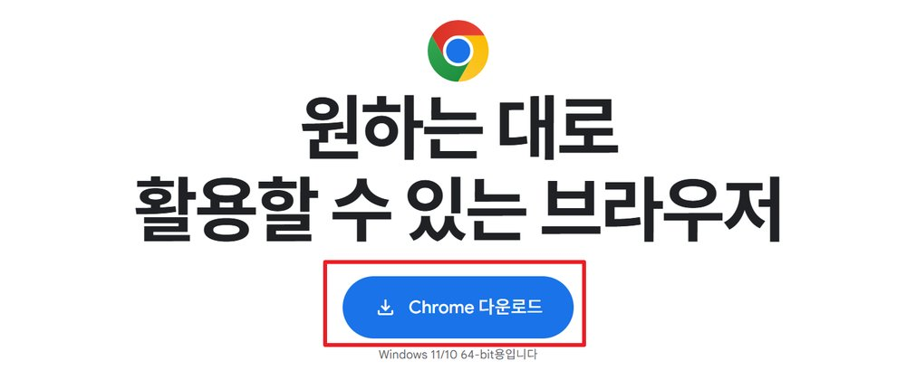
- 파일을 저장하는 창이 뜨면 이름은 그대로 두고 ‘저장’을 누릅니다
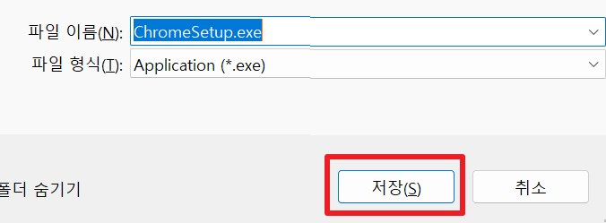
- 화면 오른쪽 위(또는 아래)에 뜨는 다운로드 표시에서 ChromeSetup.exe를 누릅니다
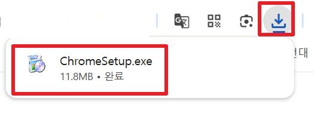
- “이 앱이 디바이스를 변경할 수 있도록 허용하시겠어요?” 창이 뜨면 ‘예’
- 설치는 알아서 진행돼요. 잠시 기다리면 크롬 창이 저절로 열립니다
- 작업표시줄에 크롬이 없다면: 크롬이 열린 상태에서 아래 아이콘을 마우스 오른쪽 클릭 → ‘작업 표시줄에 고정’
다음 단계에서 저장공간을 확인하려면 먼저 쓰시던 개인계정으로 로그인이 되어야 해요. 크롬에서 로그인이 되는지 확인해 주세요.
🔑 기존 아이디·비밀번호 찾기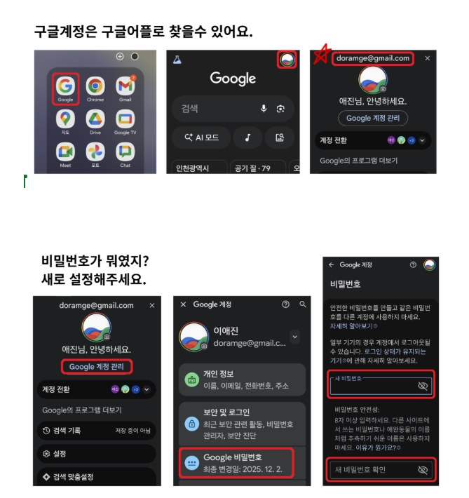
“이 번호로 만든 계정이 있었던 것 같은데…” 싶을 때, 구글 공식 방법으로 찾을 수 있어요.
- 이메일 찾기 페이지 열기 — 구글 로그인 화면의 아이디 입력칸 아래 ［이메일을 잊으셨나요?］를 누르거나 아래 버튼을 누르세요.
🔍 구글 이메일 찾기 - 휴대전화 번호 입력 — 계정에 연결했던 번호를 입력하고 ［다음］ (국가 번호가 +82인지 확인)
- 인증 코드 입력 — 휴대전화 문자로 온 6자리 코드를 입력합니다.
- 이름 입력 → 계정 확인 — 계정에 등록했던 성·이름을 정확히 입력하면, 그 번호로 가입된 구글 이메일 목록이 나타나요.
- 비밀번호가 기억 안 나면 — 찾은 이메일로 로그인 화면에서 ［비밀번호 찾기］ → 휴대전화 인증 후 새 비밀번호를 설정하세요.
🔑 구글 비밀번호 찾기(계정 복구)
💡 이름은 가입할 때 적은 그대로(성·이름 칸 구분)여야 찾아져요. 번호를 바꾼 뒤 계정에 새 번호를 등록하지 않았다면 이 방법으로는 찾기 어려워요.
휴대폰 사진이 구글 포토에 자동 백업되면서 저장공간(15GB)을 다 쓰고 계신 분이 많습니다. 저장공간이 없으면 연수에서 자료를 만드실 때 에러가 납니다. 사진을 지우실 필요 없이, 연수용 계정을 하나 새로 만들어 오시면 됩니다.
💡 사진을 정리하고 싶으시다면 구글 포토에서만 지우고 휴대폰에는 남기는 방법이 있어요. 다만 휴대폰 백업을 끈 상태를 유지해야 하고, 백업을 다시 켜면 사진이 다시 올라가거나 휴대폰 사본이 지워질 수 있어요. 지운 사진은 휴지통에 30일간 남아 있어요. 연수 준비로 하실 필요는 없고, 여유 있을 때 공식 안내를 보며 천천히 해 주세요.
📸 구글 포토 저장용량 관리 — 사진 정리하기 🔗 구글 포토 공식 안내: 사진 삭제하기STEP 3에서 저장공간이 거의 다 찼던 분만 해 주세요. 여유가 넉넉했다면 넘어가시면 됩니다.
📷 구글 계정 만들기 — 화면 따라 하기 (15단계)
위 버튼을 누르면 아래 화면이 차례대로 나옵니다. 눈에 보이는 대로만 따라오시면 돼요.
- 성·이름 입력 — 성은 선택사항이라 이름만 적어도 됩니다.
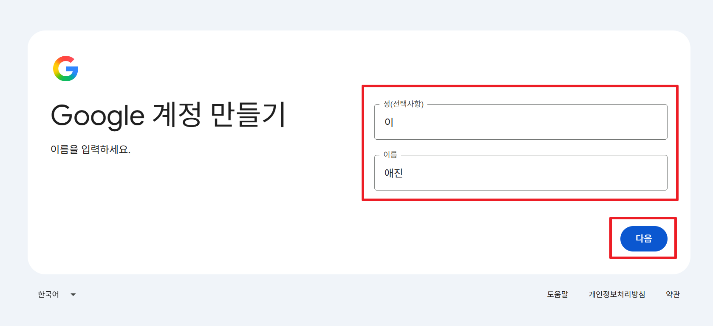
- 기본 정보 — 생년월일과 성별을 고릅니다. 생년월일은 꼭 정확하게! 잘못 넣어 미성년자로 등록되면 제미나이를 쓸 수 없어요.
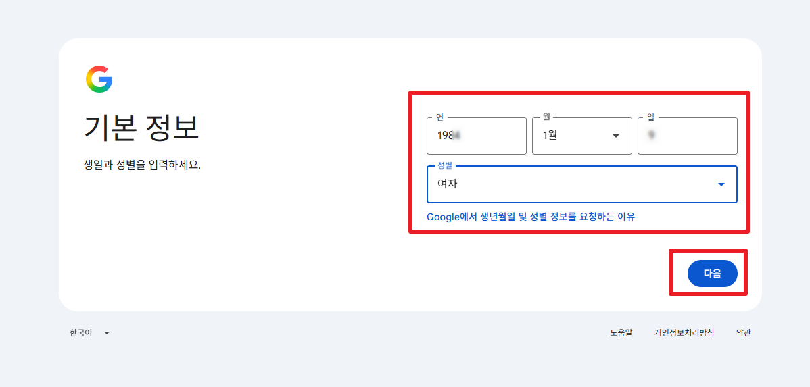
- 이메일 주소 만들기 — 구글이 추천해 준 주소 중 하나를 고르는 게 가장 편합니다.
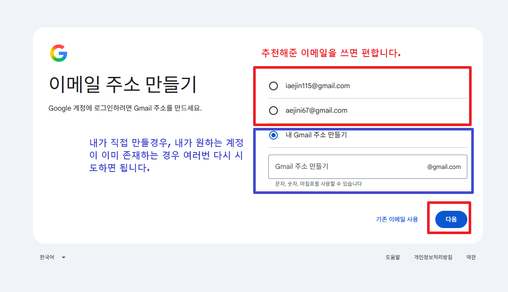
- 직접 만들고 싶다면 — ［내 Gmail 주소 만들기］에 원하는 주소를 적습니다. 이미 있는 주소라고 나오면 숫자를 바꿔 여러 번 시도하면 됩니다.
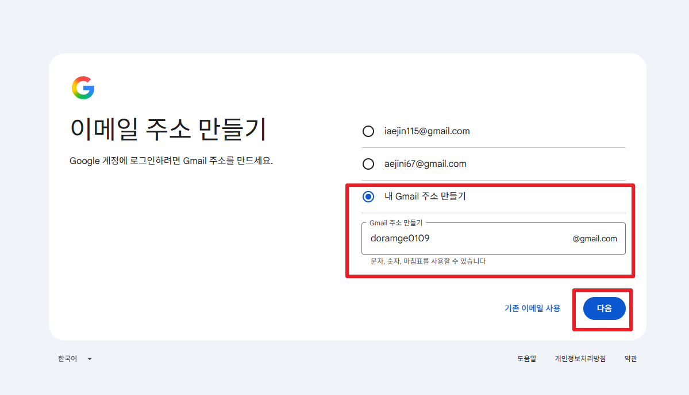
- 안전한 비밀번호 만들기 — 본인 이름 영어 + 숫자 + 기호 조합이 쉬워요. (예: dldowls1234!) 아래 칸에 똑같이 한 번 더 입력합니다.
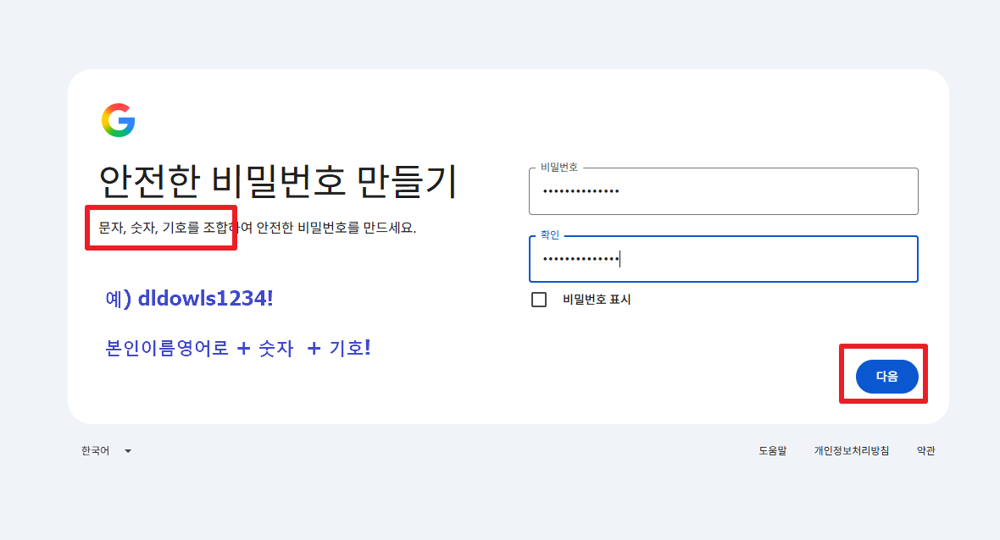
- 보안문자 입력 — 본인 휴대전화 번호를 넣고 ［다음］을 누릅니다.
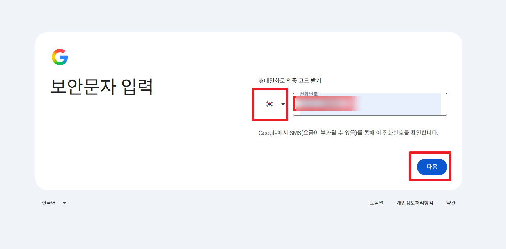
- 받은 코드 확인 — 문자로 온 G- 뒤의 6자리 숫자를 그대로 입력합니다.
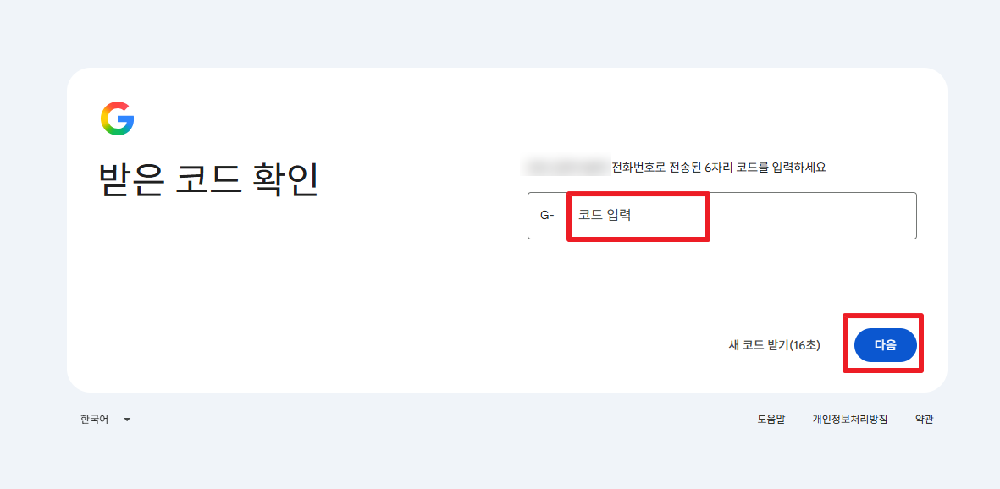
- 복구 이메일 추가 — 기존에 쓰던 메일 주소를 적습니다. 건너뛰기도 가능합니다.
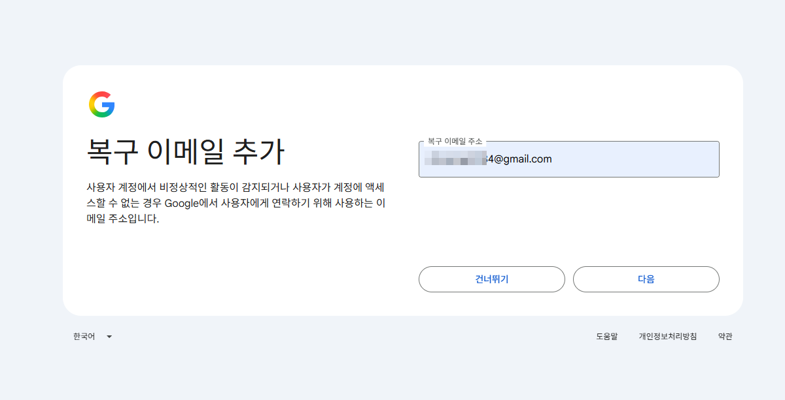
- 복구 연락처 추가 — 앞에서 쓴 복구 이메일과 같은 주소를 써도 됩니다. 건너뛰기도 가능합니다.
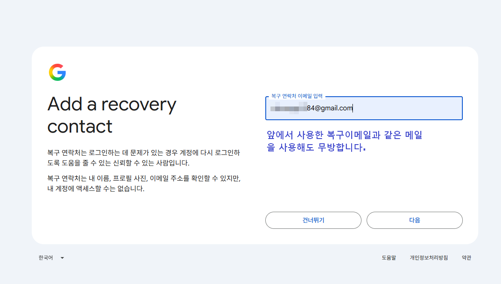
- 계정 정보 검토 — 만들어진 주소를 확인하고 ［다음］.
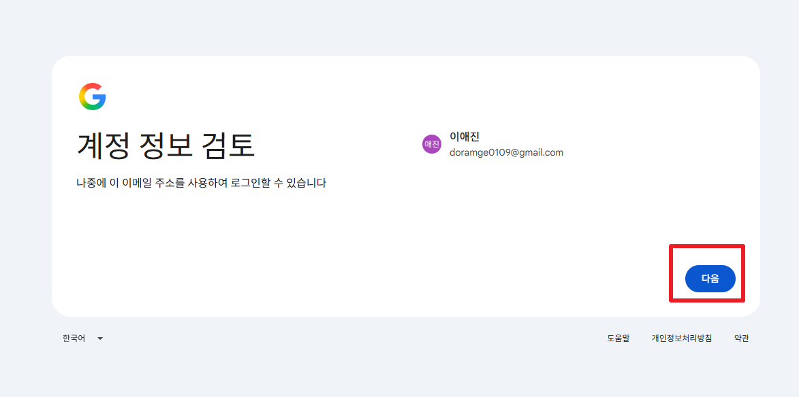
- 개인 정보 보호 및 약관 — 맨 아래 체크 두 칸을 누른 뒤 ［계정 만들기］를 누릅니다.
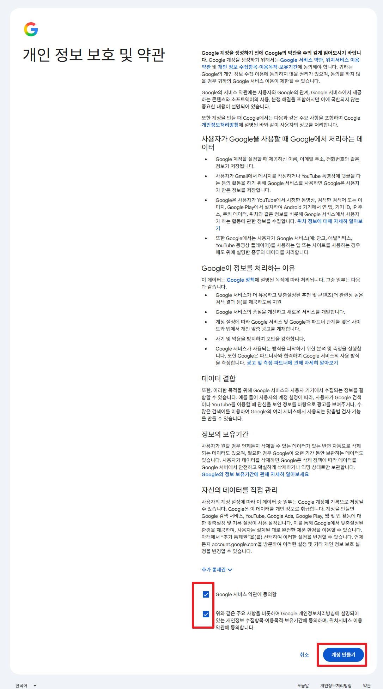
- 완성! — 계정 첫 화면입니다. 노란 박스의 ［복구 전화번호 추가］까지 해 두시면 비밀번호를 잊어도 안전해요.
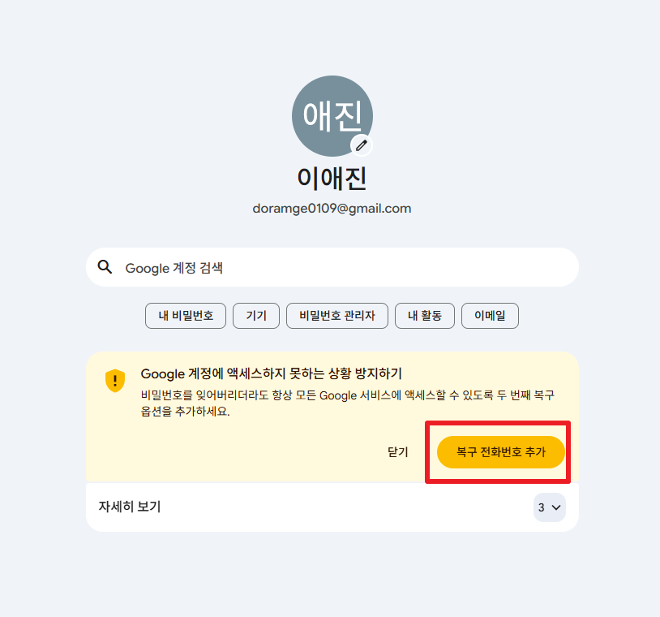
- (선택) 복구 옵션 더 채우기 — 앞 화면의 ［복구 전화번호 추가］를 누르면 복구 옵션 화면이 나옵니다. 복구 이메일 옆 ✏️를 누르고 주소를 확인한 뒤 ［코드 전송］.
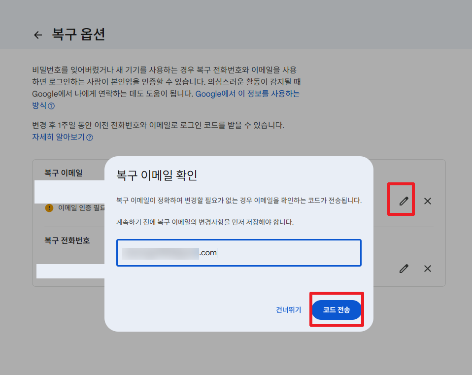
- 코드 입력칸이 나타납니다 — 이메일로 받은 6자리 숫자를 여기에 넣으면 돼요. 건너뛰기도 가능합니다.
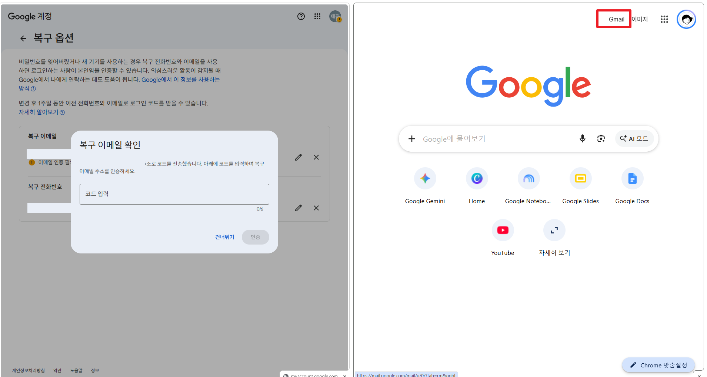
- Gmail에서 코드 확인 — 복구 이메일의 받은편지함에 온 「복구 이메일 설정 코드」 메일의 6자리 숫자를 그대로 옵겨 넣고 ［인증］을 누릅니다.
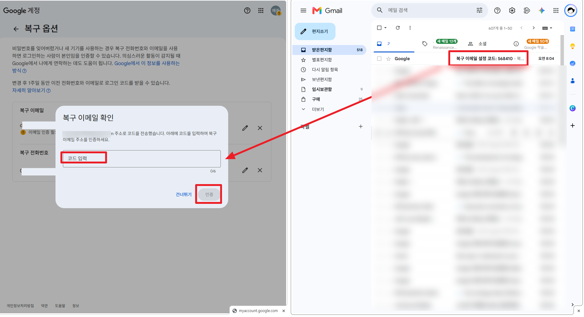
만드는 데 3~5분이면 됩니다. 휴대폰 문자 인증만 하시면 끝나요. 만드신 뒤에는 아이디와 비밀번호를 꼭 적어 두세요.
💡 계정이 두 개가 되면 연수 중 ‘크롬 프로필 분리’ 실습까지 해볼 수 있어요.
📱 한 전화번호로 인증할 수 있는 계정 수는 제한이 있어요. 막히면 아래 STEP 5 임시계정을 쓰세요.
위 방법으로도 계정 준비가 어려우시면, 아래 시트에서 오늘만 사용하는 임시 계정을 받아 쓰세요.
📄 임시 구글계정 시트 열기 (부명고 전용 시트 업데이트 예정) 👈 여기를 클릭!※ 화면에서 바로 보이지 않으면 위 ‘시트 열기’ 버튼으로 열어 주세요. (이름 작성은 시트를 직접 열어야 가능합니다.)
- 시트의 C열에 본인 이름(또는 닉네임)을 적습니다.
- 그 줄의 아이디·비밀번호로 로그인해 사용합니다.
로그인한 뒤 질문을 하나 보내서 답이 오는지 확인해 주세요. 특히 새로 만든 계정은 가끔 제미나이가 열리지 않는 경우가 있어요. 연수 당일이 아니라 지금 미리 확인해 주세요.
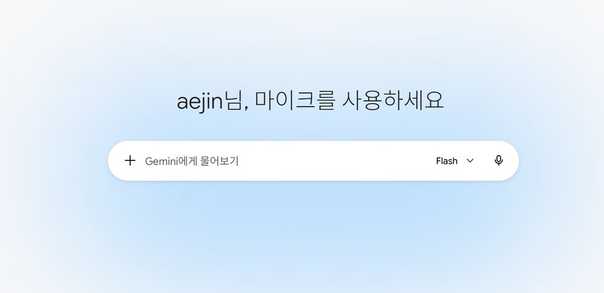
👉 새 계정에서 제미나이가 안 되나요? 기존 개인계정으로 실습하시면 됩니다. 기존 계정도 저장공간이 부족하다면 카카오톡 오픈채팅으로 미리 문의해 주세요.
※ 비밀번호는 종이나 휴대폰 메모에 적어 오세요. 이 페이지에는 입력하지 마세요.
① 내 윈도우 버전 확인 — ⊞Win+R → winver 입력 → Enter. (또는 설정 → 시스템 → 정보)
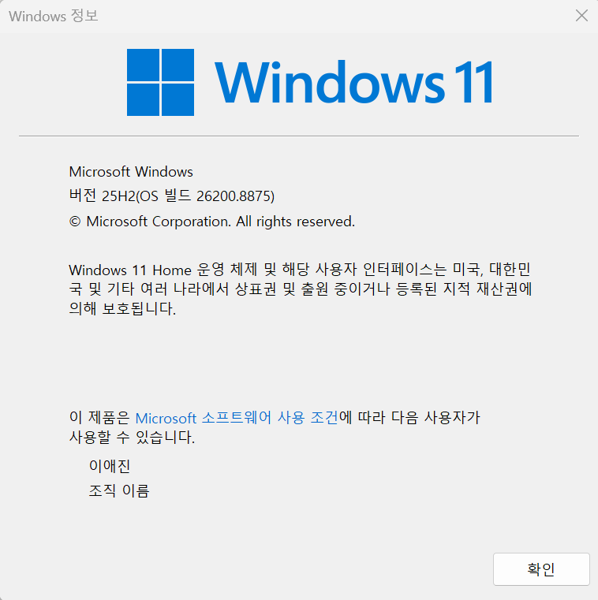
② 윈도우 11로 업데이트 (윈도우 10이라면)
- ⊞Win+I로 설정 → 업데이트 및 보안 → Windows 업데이트
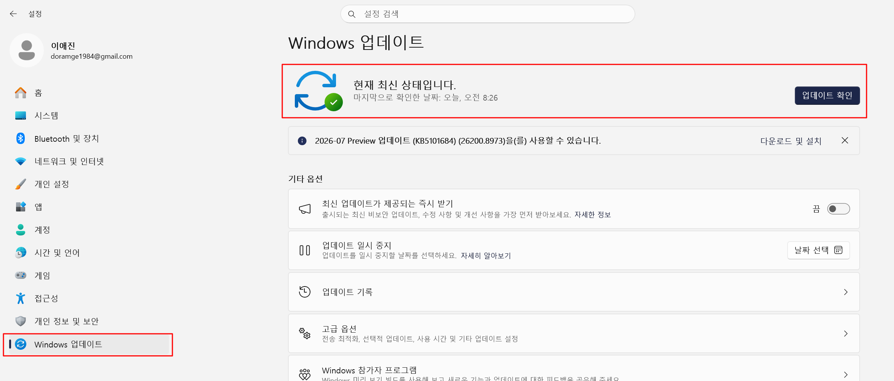
- 업데이트 확인 → “Windows 11로 업그레이드” 안내가 뜨면 다운로드 및 설치
- 안내가 없으면 Windows 11 설치 도우미 이용 → microsoft.com/software-download/windows11
- 업데이트는 시간이 걸리니 전원 연결 + 넉넉한 시간에 미리 진행하세요
준비하시다 막히면 💬 카카오톡 오픈채팅방에서 바로 물어보세요.
🔥 워밍업 게임
본격 시작 전, 가볍게 손을 푸는 시간! 게임 카드를 뒤집어 단축키를 재미있게 익혀요.
문장을 드래그 → Ctrl+C로 복사하고, 칸을 클릭해 Ctrl+V! 5문제 완성 🏁
원본 전체를 Ctrl+A로 선택해 복사·붙여넣기 하거나, Ctrl+A → Delete로 싹 지우기! 5문제 완성 🏁
아래 이모지를 캡처해서 칸에 Ctrl+V! 이모지가 바뀌며 5장 도전 📸 캡처 키는 브라우저가 못 봐서, 붙여넣기까지 해야 성공!
→ 원하는 부분 드래그
→ 칸에 Ctrl+V
→ 캡처 도구
→ + 새 캡처
→ 드래그
→ Ctrl+V
→ 전체화면 캡처
→ 칸에 Ctrl+V
(윈도우10은 안 돼요)
PrtSc가 안 될 때 — 눌러서 펼치기
① 윈도우11(최신) : PrtSc를 누르면 캡처도구가 먼저 떠요 → 뜬 화면에서 영역을 드래그해야 복사돼요. (설정 → 접근성 → 키보드 → “화면 캡처 키로 캡처 도구 열기” 끄면 예전처럼 전체화면 즉시 복사)
② 노트북 : PrtSc가 그냥 안 되면 Fn + PrtSc. Insert와 한 키에 있으면 Fn이 꼭 필요해요.
③ 그래도 안 되면 : OneDrive가 PrtSc를 가로챈 거예요 → OneDrive 설정 → 백업 → “스크린샷 저장” 끄기.
→ 제일 확실한 건 그냥 Win + Shift + S!
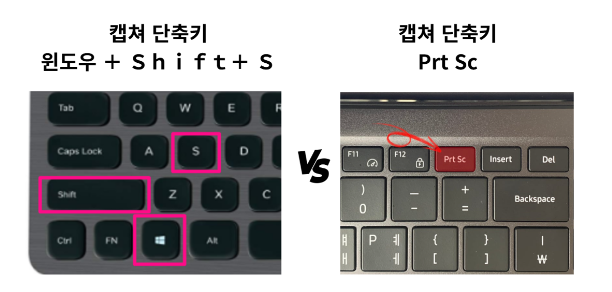
시연 · 오늘 실습 도구는 아닙니다
질문에 답하는 AI에서, 스스로 해내는 AI로
오늘 실습은 제미나이와 크롬으로 진행하지만, 에이전틱 AI가 실제로 어디까지 하는지 다른 학교 사례로 보여드릴게요
에이전틱 AI란 무엇인가
| 기존 챗봇 | 에이전틱 AI | |
|---|---|---|
| 진행 방식 | 질문 1개에 답 1개 | 목표를 주면 스스로 계획을 세움 |
| 사람의 역할 | 매 단계 직접 지시 | 방향만 정하고 결과를 확인 |
| 할 수 있는 일 | 대화, 정보 요약 | 실행 → 검증 → 결과물까지 완결 |
사례 · 서원고등학교 여주초등학교 교원연수
다섯 단계로 해결한 하루
여주초 선생님들은 클로드(에이전틱 AI)에게 한 번씩만 가르쳐 두고, 이렇게 다섯 가지 반복 업무를 넘겼습니다. 아래 화면을 눌러 직접 흐름을 따라가 보세요.
 🔍 크게 보기
🔍 크게 보기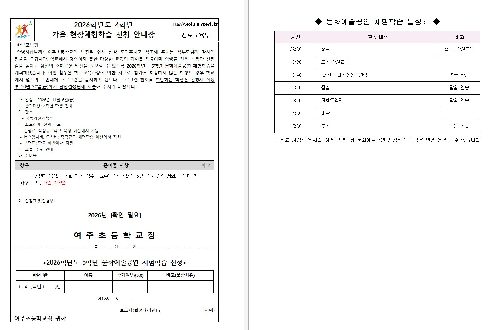
🔍 크게 보기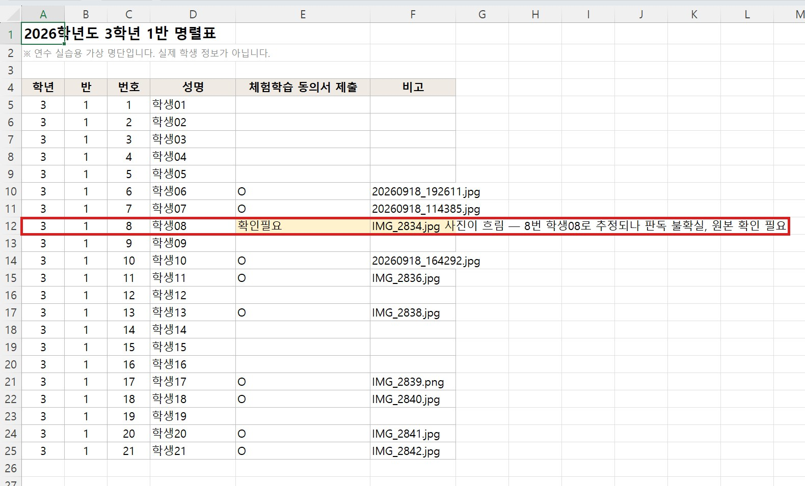
🔍 크게 보기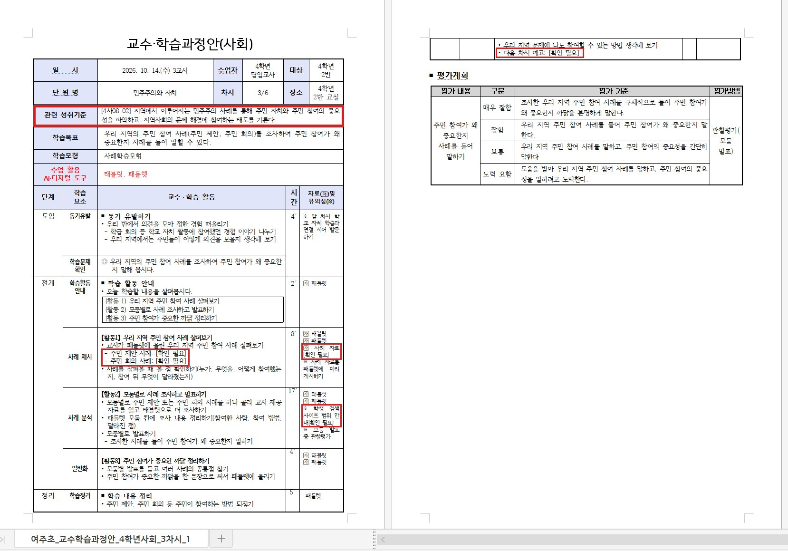
🔍 크게 보기 🔍 크게 보기
🔍 크게 보기사례 · 전정선 선생님 교사 티타임 연수 (클로드 코워크)
반복되는 업무는 "예약"으로 자동화
앞의 여주초 사례가 "한 번 맡긴 일"이라면, 아래는 "매번 자동으로 돌아가는 일"이에요. 방법은 똑같습니다 — 클로드와 대화하며 설계하고, 결과물이 마음에 들면 "이거 스킬로 저장해줘", 마지막에 "예약해줘" 한마디만 하면 끝이에요.
자동화를 만드는 핵심 기능 네 가지
| 기능 | 비유하면 | 하는 일 |
|---|---|---|
| 📁 프로젝트 | 업무별 서류철 | 반복해서 쓸 지침·관련 자료를 한 공간에 모아 두고, 그 맥락으로 작업 |
| 🔌 커넥터 | 다른 앱으로 가는 출입증 | 구글 드라이브·캘린더·노션 등과 연결해, 자료를 가져오거나 결과를 저장 |
| 📋 스킬 | 업무 매뉴얼 | "이대로 계속 해줘"라고 정해두면, 다음부터 같은 형식·절차로 작업 |
| ⏰ 예약된 작업 | 자동 알람 | 정해진 요일·시간에 같은 작업을 반복 실행 (중지·재개도 가능) |
💡 어렵게 외우지 않아도 괜찮아요. 그냥 클로드에게 하고 싶은 일을 설명하면서 "이거 자동화할 수 있어?"라고 물어보면, 클로드가 알아서 이 네 가지 중 뭐가 필요한지 판단해서 제안해 줘요.
실제로 만든 예 — 학생용 웹교안
아이들이 눌러 가며 따라 하는 수업 페이지에, 선생님이 반별로 제출물을 모아 보는 교사용 대시보드까지 붙였습니다. 클로드와 대화로 만든 예시입니다. (둘러보기만 하시고 제출은 누르지 말아 주세요)
doramge1984.github.io/pajuhak ↗이름과 마실 메뉴를 적으면 룰렛에 이름이 올라갑니다. 룰렛이 멈추는 분이 오늘의 커피 담당자! 휴대폰으로 여셔도 됩니다.
지금 참여하기 ↗크롬 활용 디지털 기초실무
오늘부터 나도 디지털 에이스
크롬·구글 꿀팁과 확장 프로그램 활용법 — 하나씩 눌러 가며 실습해요
오늘부터 나도 디지털 에이스
- ⓪ ⚙️ 시작 전 필수 — 크롬 최신으로필수▾🔴 이것부터 하고 시작합니다. 「✨ 크롬 속 제미나이」 기능은 최신 크롬에서만 나타나요.삼점 ⋮ → 도움말 → Chrome 정보 → 최신 버전 확인
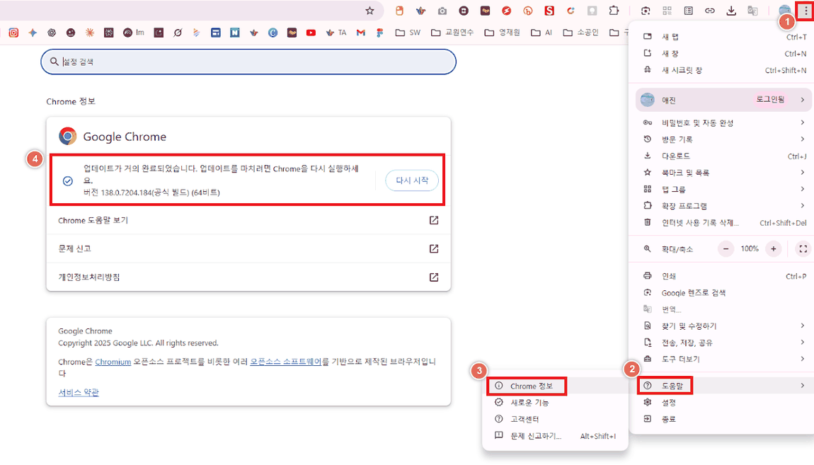
🔴 ［다시 시작］까지 꼭 누르세요.삼점 ⋮ → 설정 → 기본 브라우저 → Chrome으로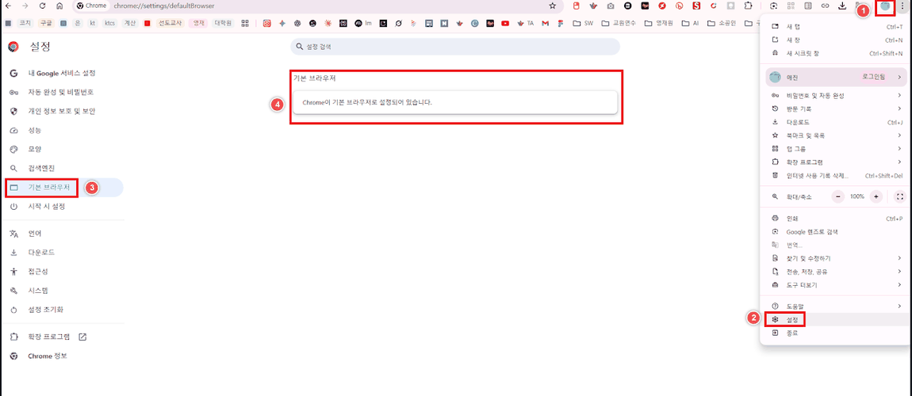
🔴 “Chrome이 기본 브라우저로 설정되어 있습니다”가 보이면 됩니다.삼점 ⋮ → 설정 → 검색엔진 → Google로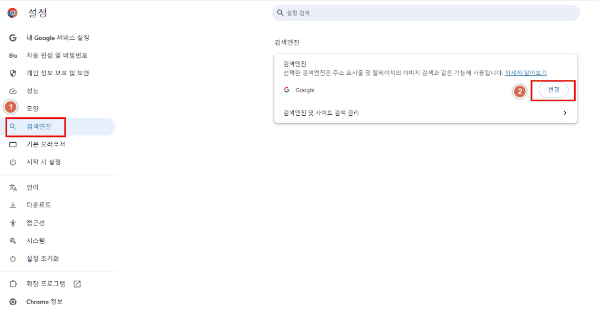
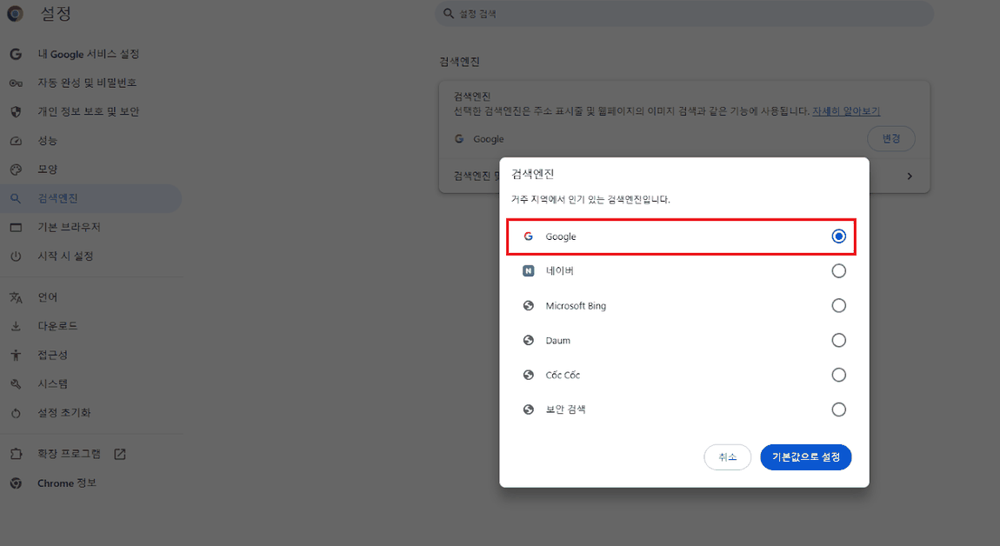
🔴 Google을 고르고 ［기본값으로 설정］까지 누르세요. - ① 로그인 제대로 하기 — 개인계정 · 기관계정 프로필 분리▾
- 기본 중의 기본이지만 놓치기 쉬운 부분 — 보안과 자료 관리에서 중요합니다
- 준비물: 개인계정과 기관계정 2개를 미리 준비해 오세요
- 크롬 오른쪽 위 프로필 아이콘 → ‘크롬(Chrome) 프로필 추가’로 계정별 프로필 만들기
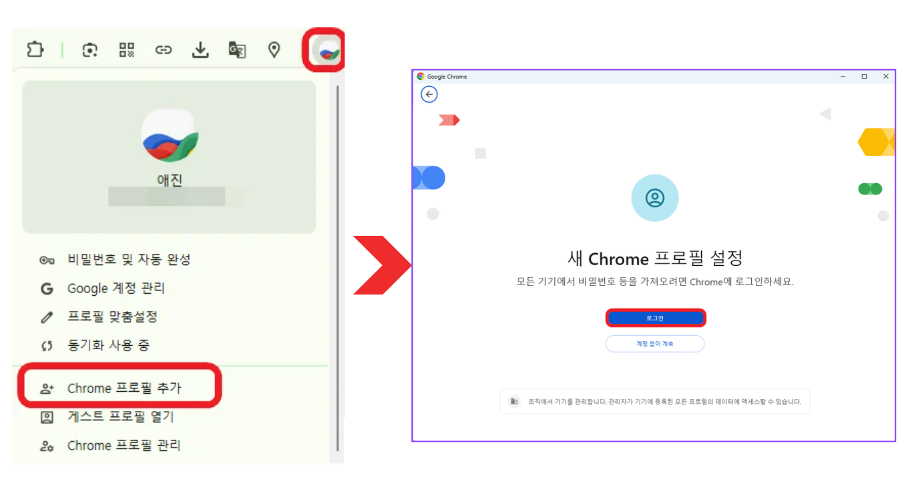
- 계정별 프로필 사진 변경 / 테마 색상으로 구분 → 어느 계정인지 한눈에
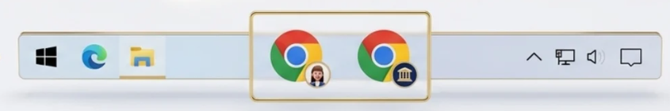
🙂 프로필 사진 만들기 (Notion Faces)📷 Notion Faces 사용법 보기 — 얼굴 꾸미고 저장하기
왼쪽에서 피부톤 · 눈 · 눈썹 · 안경 · 코 · 입 · 머리카락 · 액세서리를 차례로 골라 꾸민 뒤, 오른쪽 위 ［저장］을 누르면 이미지로 내려받아져요. (🔀 버튼을 누르면 무작위로 바꿔 줘요)
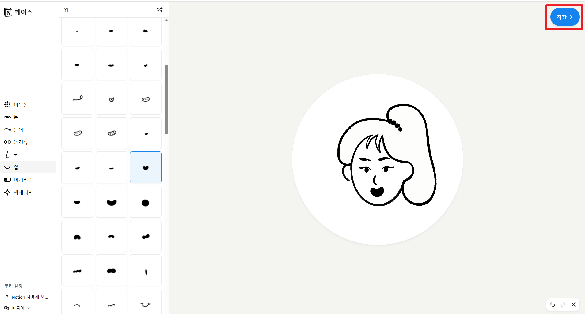
💡 저장한 이미지는 크롬 프로필 사진·구글 계정 사진으로 올리면, 개인·기관 계정을 한눈에 구분할 수 있어요.
- 계정별 바탕화면 바로가기 만들기
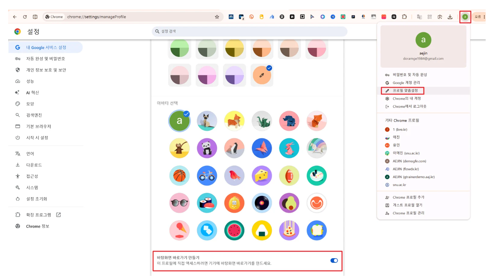
- ② 초간단 즐겨찾기 + 파비콘 만들기▾
- 미션: 웹교안 · 제미나이 · 내가 자주 가는 사이트를 즐겨찾기 하고 아이콘(파비콘)만 3개 남기기
- 주소창 오른쪽 별표(☆)로 즐겨찾기 대신 추파춥스(?) 활용하기!
- 북마크에 마우스 우클릭 → 수정 → 이름 지우기 → 아이콘(파비콘)만 남아 깔끔하고 빠르게 접속
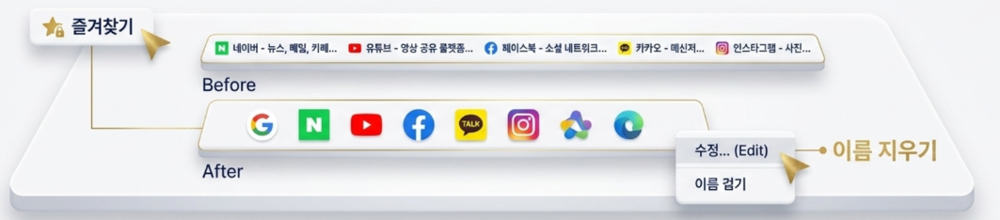
🔎 즐겨찾기바가 안 보이면 — 네 가지 방법▾
- 주소창에 붙여넣기 (가장 확실) — 아래 주소를 주소창에 넣고 Enter → ［북마크바 표시］ 켜기🔗chrome://settings/appearance단축키도 메뉴 찾기도 필요 없어요.
- 새 탭 열어보기 — Ctrl+T. 크롬은 새 탭 화면에서는 즐겨찾기바를 자동으로 보여줍니다. 거기서 우클릭 → ［북마크바 표시］를 켜면 모든 화면에서 보여요
- 메뉴로 — 오른쪽 위 ⋮ → 북마크 및 목록 → ［북마크바 표시］
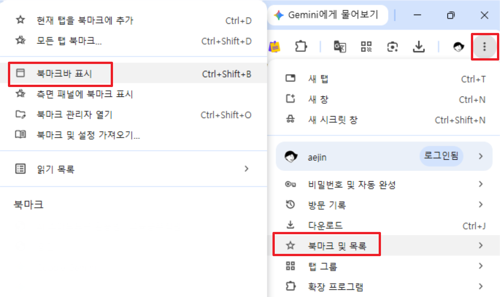
▲ ① 오른쪽 위 ⋮ → ② 북마크 및 목록 → ③ 북마크바 표시 (빨간 네모 순서대로) - 단축키 — Ctrl+Shift+B (갤럭시북에서는 안 될 수 있어요 — 아래 참고)
💡 "안 보인다"는 분의 절반은 그냥 일반 페이지에 계신 겁니다. 새 탭부터 한번 열어보시게 하세요.⌨️ Ctrl+Shift+B를 눌러도 안 될 때 — 삼성 갤럭시북이라면
갤럭시북에는 삼성 앱이 이 단축키를 먼저 가져가는 경우가 있어요. 눌러도 즐겨찾기바는 안 나오고 엉뚱한 창이 뜨거나 아무 반응이 없다면 이 경우입니다.✅ 급할 땐 이것만 — 단축키를 안 쓰면 됩니다- 주소창 바로 아래 빈 곳에서 마우스 우클릭 → ［북마크바 표시］
- 또는 오른쪽 위 ⋮ → 북마크 및 목록 → ［북마크바 표시］
🔴 이 방법은 어느 노트북에서든 됩니다. 연수 중이라면 여기까지만 하고 넘어가세요. 아래는 연수 끝나고 천천히 하시면 됩니다.1단계 · 범인부터 확인 (빅스비 잠시 끄기)- 화면 우측 하단 작업 표시줄(시계 옆)에서 ∧ (숨겨진 아이콘 표시) 화살표 클릭
- 파란색 Bixby 아이콘을 마우스 오른쪽 버튼으로 클릭 → ［종료］ 선택
- 크롬으로 돌아가 Ctrl+Shift+B를 눌러 봅니다
💡 여기서 즐겨찾기바가 나왔다면 범인은 빅스비입니다 → 2단계로 가세요.
그래도 안 되면 빅스비가 아닙니다. 다른 삼성 앱일 수 있으니 붙들지 마시고 위의 우클릭 방법을 쓰세요.💡 메뉴 이름이 ［종료］가 아니라 ［끝내기］로 보일 수도 있어요. 같은 뜻입니다.2단계 · 영구 해결 (시작 프로그램에서 제외)- Ctrl+Shift+Esc를 눌러 작업 관리자를 엽니다
- 왼쪽 메뉴에서 ［시작 앱］ 탭을 클릭합니다 (속도계 모양 아이콘)
- 목록에서 Bixby를 찾아 우클릭 → ［사용 안 함］
- PC를 다시 시작하면 그다음부터는 충돌이 없습니다
⚠️ 시작 앱에서 끄면 빅스비 음성 호출도 안 됩니다. 빅스비를 쓰신다면 1단계만 하시고, 필요할 때마다 종료해 주세요.💡 업무용 PC라 설정이 잠겨 있다면 맨 위의 우클릭 방법을 쓰세요. 결과는 똑같습니다. - ③ 즐겨찾기 폴더로 정리 (업무별로 묶기)▾매일 들어가는 곳은 정해져 있죠 — 업무포털, 나이스, 교육청 홈페이지. 즐겨찾기바에 업무별 폴더를 만들어 두면 그 안에 다 들어갑니다. 한 번 만들면 계속 쓰고, 로그인만 하면 다른 PC에서도 따라옵니다.즐겨찾기바 빈 곳 우클릭 → 폴더 추가 → 이름 입력 → 저장
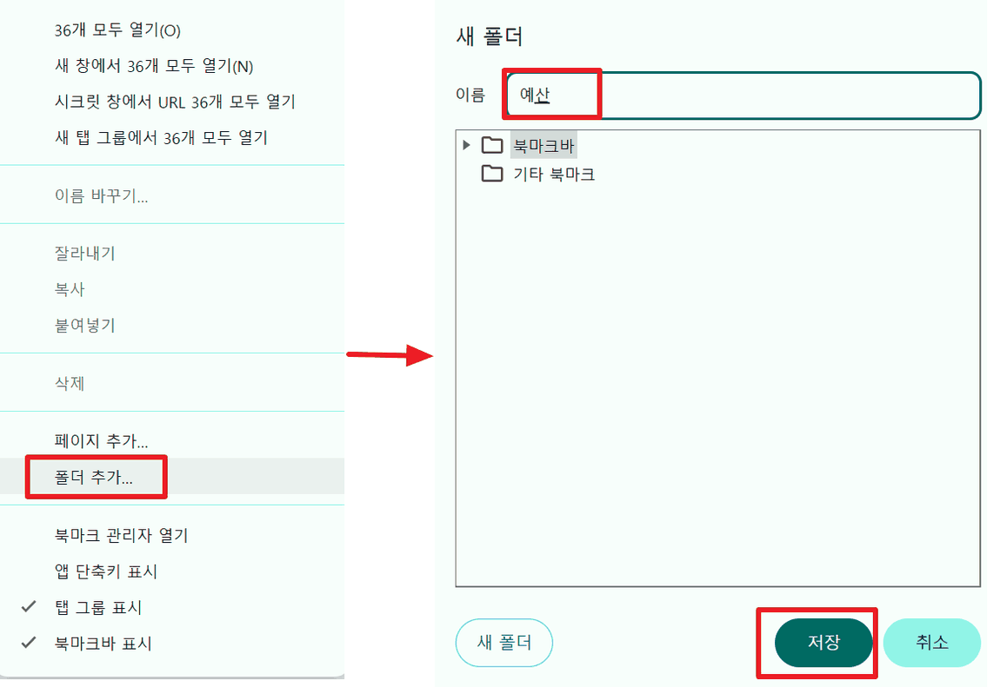
🔴 저장 위치는 ［북마크바］로 두세요. 그래야 화면 위에 바로 보입니다.이렇게 즐겨찾기바에 폴더가 생깁니다.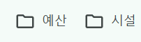
▲ 이런 식으로 업무별 폴더를 나란히 만들어 두고, 그 안에 사이트를 넣으면 됩니다.- 같은 방법으로 내 업무에 맞는 폴더 2~3개를 만듭니다 (예: 업무 · 복무·연수 · 자료)
- 자주 가는 사이트를 연 뒤 주소창 오른쪽 ★(별표) 클릭 → 폴더를 골라 저장
- 이미 있는 즐겨찾기는 마우스로 끌어다 폴더에 넣으면 됩니다
- 폴더를 누르면 그 안의 사이트가 쭉 펼쳐집니다
➕ 이렇게 묶어 보세요업무 — 업무포털 · 나이스 · 교육청 홈페이지 · 내 직종에서 매일 쓰는 시스템
복무·연수 — 복무·취업규칙 자료 · 연수원 홈페이지 · 법제처
자료·AI — 구글 드라이브 · 제미나이 · 오늘 연수 웹교안💡 폴더 하나에 10개 넘게 들어가면 다시 찾기 어려워집니다. 많아지면 폴더 안에 폴더를 하나 더 만드세요.📦 만든 즐겨찾기를 다른 계정으로 옮기기 — 개인계정 ↔ 기관계정▾
즐겨찾기는 계정마다 따로 놉니다. ①에서 나눠 둔 개인계정 프로필과 기관계정 프로필은 서로 즐겨찾기가 안 보여요. 파일 하나로 통째로 옮기면 됩니다.1단계 · 원래 계정에서 내보내기- 즐겨찾기가 있는 그 프로필의 크롬을 엽니다
- Ctrl+Shift+O — 북마크 관리자가 열립니다
(또는 ⋮ → 북마크 및 목록 → 북마크 관리자) - 관리자 화면 오른쪽 위 ⋮ → ［북마크 내보내기］
- 바탕화면에 저장 — bookmarks_2026….html 파일이 생깁니다
💡 이 HTML 파일 하나에 폴더 구조까지 통째로 들어 있어요. 메일로 보내거나 USB에 담아도 됩니다.2단계 · 받을 계정에서 가져오기- 오른쪽 위 프로필 아이콘을 눌러 받을 계정의 프로필로 전환
- 다시 Ctrl+Shift+O → 오른쪽 위 ⋮ → ［북마크 가져오기］
- 방금 저장한 HTML 파일을 고르면 끝
⚠️ 가져온 즐겨찾기는 「가져온 북마크」 폴더 안에 들어갑니다. 즐겨찾기바에 바로 안 보인다고 당황하지 마세요 — 그 폴더를 열어 마우스로 끌어다 북마크바로 옮기시면 됩니다.💡 같은 계정을 다른 PC에서 쓰는 거라면 이 과정이 필요 없어요. 그 PC 크롬에 로그인만 하면 즐겨찾기가 따라옵니다. 이건 계정이 다를 때 쓰는 방법이에요.🧹 두 번 가져오면 똑같은 게 두 벌이 됩니다. 중복이 생기면 북마크 관리자에서 지워 주세요. - ④ 한방에 큐알코드 만들기 (크롬 / 엣지 다 가능)▾
- 아직도 네이버 큐알 쓰시나요? 한방에 큐알코드 만드는 2가지 방법
- 방법 ① 마우스 우클릭 — 페이지에서 우클릭 → ‘이 페이지의 QR 코드 만들기’ (크롬·엣지 기본 기능)
- 방법 ② 크롬 확장 프로그램 — QR Code Generator 설치 후 클릭 한 번
🔳 QR Code Generator 설치
- ⑤ 캡처, 이렇게 하세요▾방법 1 · 추천⊞Win+Shift+S
→ 원하는 부분 드래그
→ 칸에 Ctrl+V방법 2 · 키보드가 안 될 때시작
→ 캡처 도구
→ + 새 캡처
→ 드래그
→ Ctrl+V방법 3 · PrtScPrtSc
→ 전체화면 캡처
→ 칸에 Ctrl+V
(윈도우10은 안 돼요)- 캡처 도구로 텍스트 복사가 되는 거 아세요? — 캡처한 이미지 속 글자를 바로 복사📄 아래 안내문의 글자를 캡처 도구로 복사해 보세요!
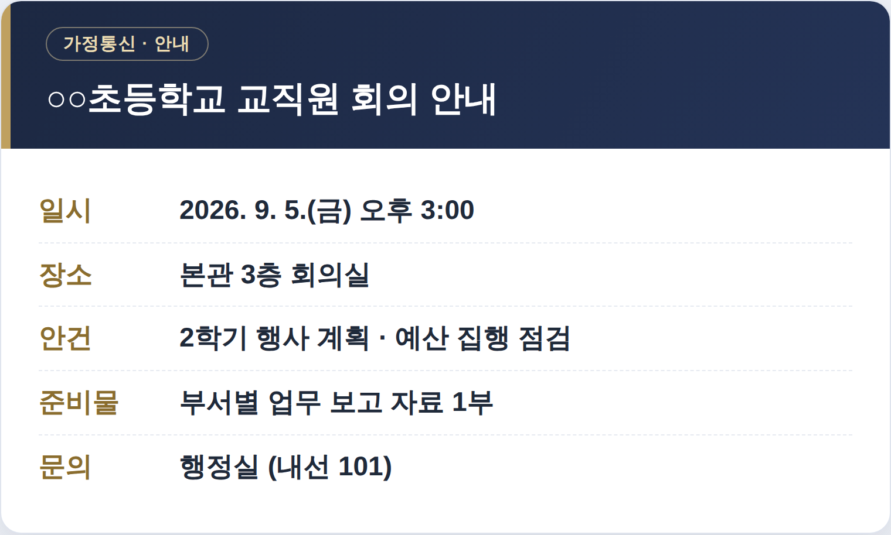
📷 캡처 도구에서 “모든 텍스트 복사” 위치 보기
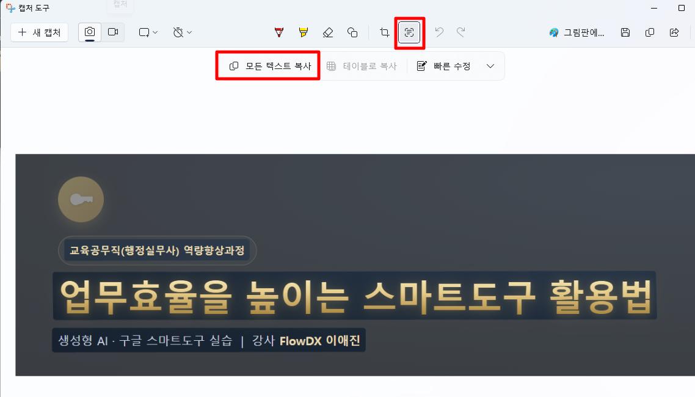
👇 복사한 텍스트를 여기에 붙여넣어 확인해 보세요 - 더 편한 방법? → 다음 항목 구글 렌즈로 이어집니다
PrtSc가 안 될 때 — 눌러서 펼치기
① 윈도우11(최신) : PrtSc를 누르면 캡처도구가 먼저 떠요 → 뜬 화면에서 영역을 드래그해야 복사돼요. (설정 → 접근성 → 키보드 → “화면 캡처 키로 캡처 도구 열기” 끄면 예전처럼 전체화면 즉시 복사)
② 노트북 : PrtSc가 그냥 안 되면 Fn + PrtSc. Insert와 한 키에 있으면 Fn이 꼭 필요해요.
③ 그래도 안 되면 : OneDrive가 PrtSc를 가로챈 거예요 → OneDrive 설정 → 백업 → “스크린샷 저장” 끄기.
→ 제일 확실한 건 그냥 Win + Shift + S!
- 캡처 도구로 텍스트 복사가 되는 거 아세요? — 캡처한 이미지 속 글자를 바로 복사
- ⑤-1 (＋더 나아가기) 스크롤 캡처·편집이 편한 픽픽(PicPick)▾픽픽은 연수 중 시간이 허락하면 설치해 실습합니다.
- ① 스크롤 캡처 — 긴 페이지를 한 장으로 쭉!
- ② 동영상 녹화 가능
- ③ 캡처 이미지에 모자이크 처리 · 번호 순서 자동 매기기 등 다양한 편집 기능
- 설치 파일 내려받기 →
🖼️ 픽픽(PicPick) 다운로드
- ⑥ 구글 렌즈 — 화면 속 글자·이미지를 바로 활용 (엣지 X / 크롬 O)▾🔬 행정·영양·시설 선생님께! 물품 라벨·기기 모델명·식재료 표시 — 찍기만 하면 뭔지 알려줘요.관련 내용(웹·이미지 등)을 오른쪽 창에서 바로 확인할 수 있어요.1. 텍스트 복사
화면 속 글자를 복사 → doc.new로 구글 독스를 열어 붙여넣어 잘 됐는지 확인
📄 이 안내문의 글자를 캡처해서 복사해 보세요!▲ 버튼을 누르면 새 탭에 빈 구글 문서가 열려요 → Ctrl+V로 붙여넣기2. 이미지로 복사복사한 이미지를 PPT·캔바 등 어디든 붙여넣기(캡처 불필요) → slide.new로 구글 슬라이드에서 확인
3. 번역화면 속 외국어를 바로 번역
🌍 이 외국어 간판을 캡처해서 번역해 보세요!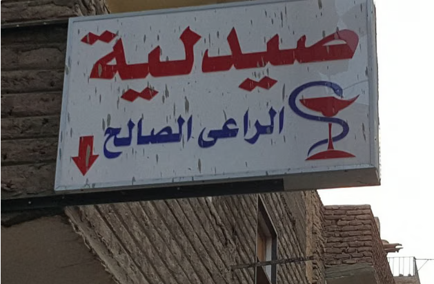
안 읽히는 글자도 있어요. 그럴 땐 결국 사람이 확인해야 한다는 것도 함께 알아두세요.💡 구글 렌즈가 안 뜨면? ① 크롬인지 확인(크롬만 됩니다, 엣지 X) · ② ⋮ → 도움말 → Chrome 정보 → 최신으로 업데이트 · ③ 그래도 안 되면 ⋮ → 설정 → 검색엔진을 ‘Google’로📐 이 수학 문제를 캡처해서 구글 렌즈·제미나이로 풀어보세요!
자녀가 가져온 문제도 이렇게 찍어서 풀이를 받아볼 수 있어요.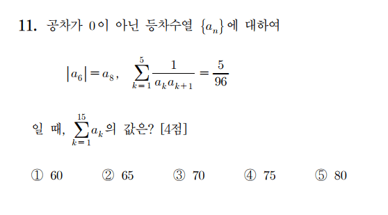
- ⑦ 모바일 구글 렌즈▾📱 아래 화면은 갤럭시(삼성)폰 기준이에요. 아이폰도 다 됩니다 — 들어가는 길만 조금 달라서, 맨 아래 ［🍎 아이폰에서는 이렇게］에 따로 정리해 뒀어요.
- 휴대폰 구글 앱 · 크롬에서 카메라/이미지로 글자·사물·번역을 바로 인식
📱 휴대폰에서 구글 렌즈 쓰는 법 보기
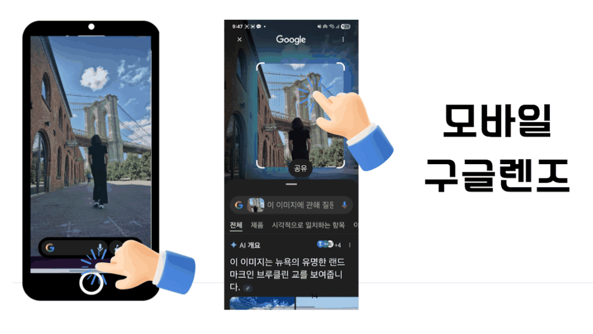
▲ 카메라·사진에서 바로 — 구글 앱 검색창의 렌즈 아이콘을 누르고 찍거나 사진을 고르면, 그 자리에서 AI 개요로 무엇인지 알려줍니다.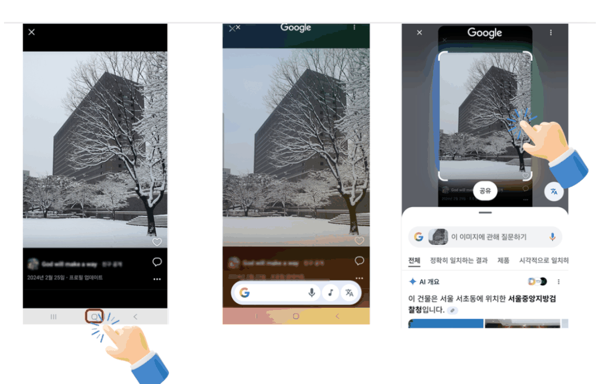
▲ 지금 보고 있는 화면 그대로 — 앱을 벗어나지 않고 하단 검색(렌즈) 버튼을 누르면 화면 속 사물을 바로 찾아줍니다. 캡처해서 옮길 필요가 없어요. - 스마트폰으로 QR코드를 촬영해보자!
① 갤러리에서 이미지 꾹 눌러 링크 들어가기
② 스마트폰에 저장된 QR 이미지로 링크 들어가기📷 QR 촬영해서 링크 여는 방법 보기
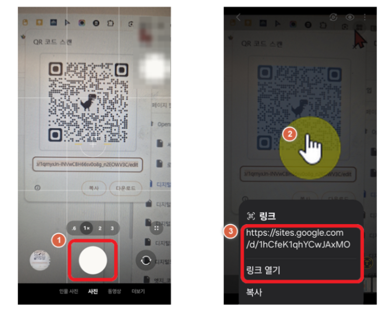
▲ ① 카메라로 QR을 찍고 → ② 화면을 꾹 누르면 → ③ ［링크 열기］가 떠요. - 현장 사진 속 글자 추출, 실물 번역 등 밖에서도 그대로 활용
➕ 현장에서 이렇게 씁니다물품·기기 라벨이나 부품 사진을 찍어 무엇인지 찾기 · 외국어 안내문·라벨 번역 · 종이 서류 속 글자를 찍어 텍스트로 꺼내기🍎 아이폰에서는 이렇게 — 구글 렌즈 쓰는 3가지 길▾
아이폰에는 갤럭시의 “화면 그대로 검색” 버튼이 없어요. 대신 구글 앱과 크롬 앱으로 똑같이 할 수 있습니다. 앱스토어에서 「Google」과 「Chrome」을 먼저 설치해 두세요.① 카메라로 바로 — 가장 많이 씁니다- Google 앱을 엽니다
- 검색창 오른쪽 렌즈 아이콘(📷)을 누릅니다
- 비추고 촬영 → 글자·사물·번역 결과가 바로 나옵니다
💡 홈 화면에 Google 위젯을 올려 두면 앱을 열 필요 없이 위젯의 렌즈 아이콘을 바로 누를 수 있어요.② 사진첩에 있는 사진으로- 같은 렌즈 아이콘을 누릅니다
- 화면 아래 사진 선택 도구를 눌러 사진첩에서 고릅니다
- 공문·안내문을 찍어 둔 사진에서 글자만 뽑아 쓸 수 있어요
💡 화면을 캡처해서 쓰면 “화면 검색”이 됩니다. 아이폰은 전원 버튼 + 볼륨 위를 동시에 눌러 캡처 → 그 사진을 위 방법으로 불러오면 돼요.③ 웹에서 본 이미지 바로크롬 앱으로 웹을 보다가 이미지를 꾹 길게 누르면 ［Google로 이미지 검색］이 뜹니다. 캡처할 필요 없이 그 자리에서 검색돼요.⚠️ 아이폰 기본 브라우저(사파리)에서는 안 됩니다. 구글 렌즈는 Google 앱이나 크롬 앱 안에서만 동작해요. 설치가 안 돼 있으면 먼저 받아 주세요. - 휴대폰 구글 앱 · 크롬에서 카메라/이미지로 글자·사물·번역을 바로 인식
- ⑧ 전체 글 가져오기 (복사 허용)▾
- 구글 렌즈는 일부 글만 잡히고 전체 글은 안 긁히는 단점이 있어요
- 복사 허용(Allow Copy) 확장 프로그램이면 복사가 막힌 사이트에서도 전체 글을 쏙 복사
📋 복사 허용 설치 - 여기서 직접 해보세요 — 아래 글을 열고 먼저 그냥 복사해 보세요. 그다음 확장을 켜고 다시 복사해 보면 차이가 바로 느껴집니다
📄 실습용 글 열기 — 네이버 블로그 →
💡 복사가 되는 글도 있고 안 되는 글도 있어요. 막혀 있으면 확장 아이콘을 눌러 켠 뒤 새로고침하고 다시 시도하세요.⚠️ 가져온 글은 참고용입니다. 남이 쓴 글을 그대로 옮겨 쓰면 안 되고, 출처를 밝히거나 내 문장으로 바꿔 쓰셔야 합니다. - ⑨ 툴바 설정 (분할뷰 · 큐알코드 · 구글 렌즈 등)▾
- 자주 쓰는 기능(분할뷰 · 큐알코드 · 구글 렌즈 등)을 툴바에 꺼내두면 클릭 한 번으로 사용
- 설정: 툴바 빈 곳 우클릭 → 도구 모음 맞춤설정(또는 ⋮ 메뉴)에서 원하는 도구 켜기
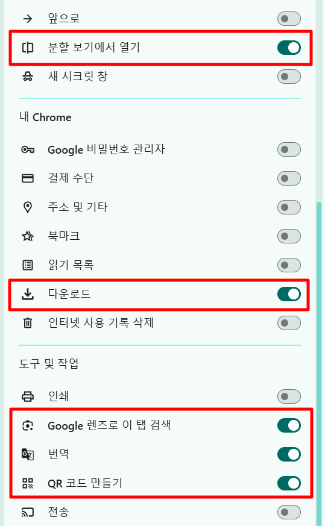
▲ 켜 두면 좋은 것 네 가지 — 분할 보기에서 열기(자료 보며 문서 작성) · Google 렌즈로 이 탭 검색 · 번역 · QR 코드 만들기. 나머지는 꺼 두면 툴바가 깔끔해요.➕ 순서도 바꿀 수 있어요맨 아래 안내처럼 툴바의 버튼을 마우스로 끌어 자주 쓰는 것을 왼쪽으로 옮겨 두세요. - ⑩ 탭 그룹 활용 (업무별 탭 정리)▾
- 여러 탭을 업무별로 묶어 색·이름으로 정리 — 예: ‘업무’ · ‘연수’ · ‘자료’ 그룹
- 만들기: 탭 우클릭 → 새 그룹에 탭 추가 → 이름·색 지정
- 그룹을 접으면 화면이 깔끔, 다시 누르면 펼쳐져요 (저장 그룹으로 두면 창을 닫아도 유지)
- ⑪ 시크릿 모드 vs 게스트 모드▾
- 시크릿 모드 = ‘나’를 위한 보호 — 공용 PC에 내 흔적을 남기고 싶지 않을 때, 내가 만든 웹사이트 확인용
- 게스트 모드 = ‘남’을 위한 배려 — 내 컴퓨터를 학생·동료에게 잠시 빌려줄 때, 내 정보를 전혀 안 보여주고 빌려주기
🕵️ 시크릿 모드 — 내 흔적을 안 남긴다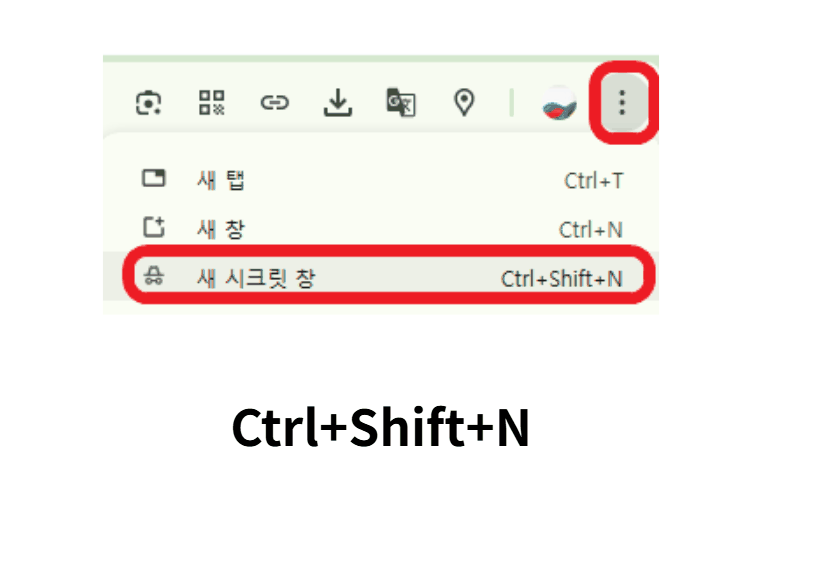
▲ 여는 법 — 오른쪽 위 ⋮ → ［새 시크릿 창］. 단축키는 Ctrl+Shift+N 입니다.➕ 업무에서 이럴 때공용 PC에서 잠깐 검색할 때 · 내가 만든 공고문·홈페이지가 남들 눈에 어떻게 보이는지 로그인 안 한 상태로 확인할 때 · 같은 사이트에 계정 두 개로 동시에 들어갈 때⚠️ 시크릿 모드가 “익명”은 아닙니다. 내 PC에 기록이 안 남을 뿐, 기관 네트워크와 접속한 사이트에는 그대로 남습니다.👤 게스트 모드 — 남에게 잠깐 빌려줄 때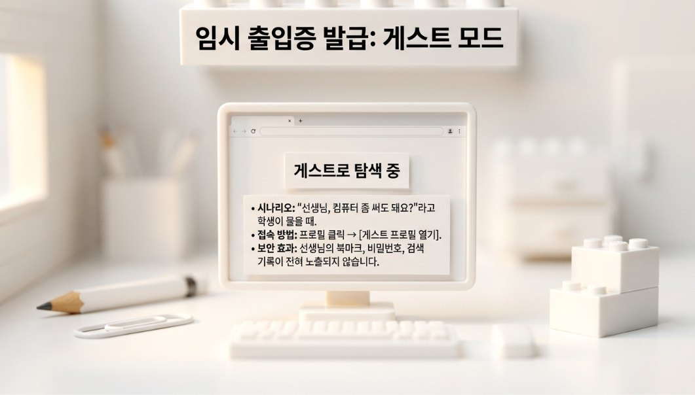
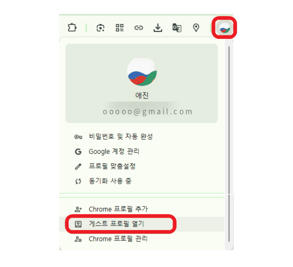
▲ 여는 법 — 툴바 오른쪽 프로필 아이콘 클릭 → ［게스트 프로필 열기］. 내 북마크·비밀번호·검색 기록이 전혀 안 보입니다.➕ 둘의 차이 한 줄시크릿은 내가 쓰면서 흔적을 안 남기는 것, 게스트는 남이 쓰게 하면서 내 것을 안 보여주는 것. 민원인·학생에게 잠깐 빌려줄 땐 게스트가 맞습니다. - ⑫ 내 계정 삭제 vs 원격으로 기기 관리▾
- 상황: “내 컴퓨터가 아닌데 로그인하기가 꺼려져요” / “다른 기기 쓴 뒤 이 기기에서 제 아이디 완전 삭제해주세요”
- 내 계정 삭제: 브라우저 프로필 → 크롬 프로필 관리 → ⋮(삼점) → 삭제
- 원격으로 기기 관리: 브라우저 프로필 → 구글 계정 관리 → 기기 → 로그아웃
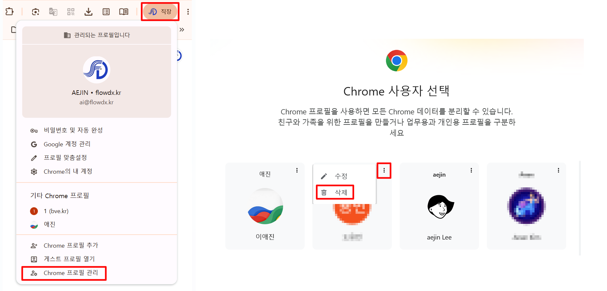
▲ 순서 — 툴바 오른쪽 프로필 아이콘 클릭 → 맨 아래 ［Chrome 프로필 관리］ → 지울 프로필 카드의 ⋮ → ［삭제］⚠️ 삭제하면 그 프로필의 북마크·기록이 이 PC에서 사라집니다. 동기화를 켜 두셨다면 계정에는 남아 있어 다시 로그인하면 돌아오지만, 동기화를 안 켰다면 복구되지 않습니다. 지우기 전에 한 번 확인하세요.➕ 남의 PC에서 썼다면 이게 더 확실합니다그 PC에서 프로필을 지우는 것과 별개로, 내 폰이나 다른 기기에서 구글 계정 관리 → 보안 → 내 기기로 들어가 원격 로그아웃까지 해 두세요.📱 원격으로 기기 관리 — 화면으로 보기① 프로필 → ［Google 계정 관리］ → 검색창 아래 ［기기］를 누릅니다.② 로그인돼 있는 기기 목록이 나옵니다. 지울 기기를 고르고 ［로그아웃］. 그 기기에서 내 계정이 바로 빠집니다.➕ 여기서 같이 보면 좋은 것기기마다 마지막 접속 위치·시각이 표시됩니다. 모르는 기기가 있으면 ［모르는 기기/세션인가요?］를 눌러 바로 조치하세요. 연수 끝나고 한 번은 훑어보시길 권합니다.⚠️ 공용 PC를 쓰셨다면 이게 마지막 안전장치입니다. 그 자리에서 로그아웃을 깜빡했어도, 내 폰에서 이 화면으로 들어가 끊어 버리면 됩니다.
오늘 익힌 크롬 꿀팁(구글 렌즈, 확장 프로그램, .new 단축키)은 학생들이 프로젝트 주제를 조사하고 자료를 모으는 단계에서 그대로 쓸 수 있어요. 모둠별 자료 정리 규칙만 정해 주면 됩니다.
구글폼 · QR
구글폼 설문 1분 완성
내 업무에 바로 쓰는 설문, 제미나이와 함께 1분 만에 · QR로 바로 배포까지
구글폼 설문 1분 완성 · QR 배포
- ① AI로 손쉽게 구글폼 만들기▾
- 주소창에 form.new 입력 → 새 구글폼 바로 열기
- AI 모드가 보이나요? 프롬프트 한 줄로 폼을 자동 생성
- 안 보이면 워크스페이스 랩스 가입(개인계정만 가능) — 무료 계정도 AI 기능 사용 가능
🔗 워크스페이스 랩스 가입하기🎬 워크스페이스 랩스 가입 방법 (이미지로 따라하기)
- ② 간단한 폼 만들고 응답 받아보기▾제미나이로 문항을 설계한 뒤 폼으로 옮기는 방법이에요. 아래 프롬프트를 복사해서 바로 써 보세요(상황에 맞게 바꿔도 좋아요).✎이수증 취합 설문을 만들거야. 이름, 소속, 이수증 업로드로 만들어줘.의견 수합·등록증(사진) 수합, 어떻게 하세요? 이메일로 받으면 시간이 많이 걸려요.
- 이름 · 소속 · 파일 첨부로 아주 간단한 폼 먼저 만들어 보기 (예시: 이수증취합)
- 구글시트 연동 — ‘응답’ 탭 → 구글시트로 연결하면 응답이 실시간으로 시트에 쌓이고 자동 집계
- 응답 폼 공유·확인 — ‘보내기’로 링크 공유 후, 시크릿 모드에서 응답자 화면 그대로 확인
- 응답 모드로 확인 — 실제 응답이 어떻게 들어오는지 보기
- 취합 정보 확인 — 파일 업로드 응답은 구글드라이브에 폴더가 자동 생성돼 사진이 착착 정리 (※ 응답자도 구글 로그인 필요)
- ③ 그대로 쓰는 설문 프롬프트 — 공통 + 내 직종▾🎒 담임 선생님께! 현장체험학습 동의·모둠 편성, 📚 교과 선생님께! 수행평가 자료 제출·수업 만족도 조사 — 종이 걷는 일 이제 끝.카드의 ［복사］를 누르고 제미나이(또는 구글폼 AI 모드)에 붙여넣으면 문항이 바로 나와요. 공통에서 하나, 내 업무에서 하나 골라 보세요.👥 공통 — 누구나 (직종 상관없이 해마다 하는 설문)✎“교직원 법정 의무연수(안전교육 등) 이수증 제출”한 내용의 설문을 구글폼으로 만들려고 해. 문항을 만들어줘.✎“교직원 워크숍(또는 체육대회) 참석 여부 및 점심 메뉴 조사”한 내용의 설문을 구글폼으로 만들려고 해. 문항을 만들어줘.✎“방학 중 근무 일정 및 비상 연락망 업데이트”한 내용의 설문을 구글폼으로 만들려고 해. 문항을 만들어줘.🧩 업무별 예시 — 내 업무 카드를 찾아 복사하세요🎒 담임교사 (학급 운영·학부모 소통)✎“현장체험학습 참가 동의 및 참가비 납부 확인”한 내용의 설문을 구글폼으로 만들려고 해. 문항을 만들어줘.✎“학부모 상담 희망 날짜·시간 사전 조사”한 내용의 설문을 구글폼으로 만들려고 해. 문항을 만들어줘.📚 교과 담당 (수업·수행평가)✎“수행평가 모둠 편성을 위한 희망 조사”한 내용의 설문을 구글폼으로 만들려고 해. 문항을 만들어줘.✎“진로 연계 선택과목 수요조사”한 내용의 설문을 구글폼으로 만들려고 해. 문항을 만들어줘.🎯 진로·진학 담당 (진로전담·학년부)✎“대학 입시 설명회·모의면접 참석 신청”한 내용의 설문을 구글폼으로 만들려고 해. 문항을 만들어줘.✎“진로체험(직업체험처) 희망 분야 조사”한 내용의 설문을 구글폼으로 만들려고 해. 문항을 만들어줘.🏃 동아리·방과후 담당 (동아리·방과후학교)✎“신설 동아리 개설 희망 및 신청 인원 모집”한 내용의 설문을 구글폼으로 만들려고 해. 문항을 만들어줘.✎“방과후학교 프로그램 신청 및 수강 희망 조사”한 내용의 설문을 구글폼으로 만들려고 해. 문항을 만들어줘.💬 상담·생활지도 (Wee클래스·생활지도부)✎“상담 희망 날짜·시간 사전 예약(상담 내용은 받지 않음)”한 내용의 설문을 구글폼으로 만들려고 해. 문항을 만들어줘.⚠️ 상담 내용·가정 형편·건강 정보는 구글폼으로 받지 마세요. 폼은 신청·예약까지만, 민감한 이야기는 대면으로.✏️ 내 것으로 바꿔 쓰기 (○○○ 자리에 내 설문 주제를 넣으세요)✎“○○○”한 내용의 설문을 구글폼으로 만들려고 해. 문항을 만들어줘.➕ 결과가 밋밋하면 한 줄 더 붙이세요“사진 첨부 문항을 넣어줘” · “학년·반은 드롭다운으로, 수량은 숫자만 받게 해줘” · “이름은 필수로, 나머지는 선택으로 해줘” · “응답자가 3분 안에 끝낼 수 있게 문항을 8개 이내로 줄여줘”⚠️ 개인정보는 꼭 필요한 것만. 주민등록번호·계좌번호는 구글폼으로 받지 마세요. 학생·보호자 정보(이름·연락처 등)는 업무에 필요한 만큼만 받고, 설문 맨 앞에 수집 목적과 보관 기간을 한 줄 적어 두세요. 응답 시트는 공유 범위도 꼭 확인하세요.
🤖 더 꼼꼼하게 — 사양까지 적어 주는 예시 (현장체험학습 참가 신청)
원하는 문항·형식·설정을 한 번에 적어 주면 제미나이가 그대로 폼을 설계해요. 제목·문항만 내 업무로 바꿔 쓰세요.📋너는 학교 업무를 돕는 도우미야. 아래 사양 그대로 "현장체험학습 참가 신청" 구글 설문지를 만들어 줘.
[폼 제목] 현장체험학습 참가 신청
[폼 설명] 현장체험학습 참가 여부와 필요한 정보를 받습니다. 수집한 정보는 체험학습 운영에만 사용하고 종료 후 파기합니다.
[섹션 1 · 학생 정보]
1) 학생 이름 — 단답형, 필수
2) 학년·반·번호 — 단답형(예: 2학년 3반 15번), 필수
[섹션 2 · 참가 신청]
3) 참가 여부 — 객관식(참가 / 불참)
4) 참가비 납부 방법 — 객관식(계좌이체 / 현장수납 불가)
5) 알레르기·주의사항 — 장문형, 선택
6) 귀가 방법 — 객관식(단체 버스 / 보호자 동행 귀가)
[섹션 3 · 보호자 확인]
7) 보호자 연락처 — 단답형(숫자만), 필수
8) 담임 선생님께 전할 말 — 장문형, 선택
9) 개인정보 수집·이용 동의 — 객관식(동의함), 필수
[설정] 응답을 새 스프레드시트(현장체험학습 참가자 명단)로 연결. 완성 후 편집 링크와 응답 링크를 알려줘. - ④ ＋더 나아가 심화 기능▾
- ① 응답 검증 — 전화번호는 숫자만·이메일은 형식 맞게·금액은 숫자만 → 잘못 적어낸 자료 다시 받는 스트레스를 원천 차단
- ② 조건부 이동(섹션 분기) — 답에 따라 다음 질문이 달라지게 (예: ‘돌봄교실 참여? → 예’면 요일·귀가 방법 질문이 뜨게)
- ③ 새로 들어온 최신 기능 — 구글폼 응답 기한 설정 · 응답자 설정
- ⑤ 재사용 · 함께 관리▾
- 잘 만든 폼은 복사해서 매년 재사용
- 공동 편집자를 추가해 같은 업무 동료와 함께 관리 (다시 안 만들어도 돼요)
구글폼은 모둠 산출물에 대한 동료평가·피드백을 걷는 도구로, QR코드는 발표 당일 결과물을 빠르게 배포하는 도구로 쓸 수 있어요. 수업 마무리 단계에 넣어 보세요.
제미나이 인 크롬
크롬 화면 옆에 붙는 AI 비서
창을 따로 켤 필요 없이, 보고 있는 화면 그대로 요약·비교·정리를 도와줍니다
제미나이 창을 먼저 켜 둡니다.
- ① 제미나이 in 크롬이란?▾
크롬 브라우저 안에 제미나이가 들어와, 창을 따로 안 켜도 화면 옆에 붙어 도와줘요.
- 지금 보는 웹페이지·PDF 요약
- 영문 자료 → 한국어 요약·번역
- 여러 탭 한꺼번에 비교, 유튜브 영상 요약
- Gmail 초안·캘린더 일정까지 연동
- ② 켜는 법 (활성화) — 크롬 오른쪽 위 ✨ 버튼▾
- ⋮(점 세 개) → 설정
- 맨 아래 Chrome 정보 → 최신 버전으로 자동 업데이트
- 업데이트되면 ‘AI 혁신’ 메뉴가 생겨요 → ‘크롬의 Gemini’ 켜기
- 크롬 오른쪽 위 ✨ Gemini 버튼을 누르면 화면 옆에 제미나이 창이 열렸다 닫혔다
💡 ‘AI 혁신’이 안 보이면 크롬이 아직 구버전이에요 — 업데이트 후 크롬을 껐다 켜세요. 📌 개인 구글 계정으로 로그인해 실습하세요(학교·관리되는 계정은 정책상 막혀 있을 수 있어요).
🙋 그래도 안 뜨면? gemini.google.com을 열고 링크를 붙여넣거나 파일을 올려서 같은 프롬프트를 쓰면 돼요. - ⭐ 첫 실습 — 대충 쓴 메모를 정중한 안내 문자로 (탭 공유 없이 · 30초)▾✉️ 모든 선생님 공통! 급하게 대충 쓴 알림장 메모, 보내기 전에 정중한 문자로 30초 만에 바꿔요.✉️대충 쓴 메모 → 정중한 안내 문자 (탭 공유 없이 · /정중하게 스킬)띄어쓰기도 대충, 반말 섞인 메모를 넣어 보세요. 날짜·시간·장소가 그대로 살아 있는지 꼭 확인!👉 먼저 할 일 — 제미나이 창 입력칸 위에 공유 중인 탭이 보이면 ✕로 빼 주세요. (안 빼도 아래 프롬프트에 “페이지 내용은 참고하지 마”가 들어 있어요)① 내 상황에 맞는 메모 고르기 — ［⬇ 프롬프트에 추가］를 누르면 아래에 쏙 들어가요🏫 담임교사담주 수요일 9/24 오후2시 학부모총회 체육관 참석요청 주차는 후문쪽으로 미리 안내 늦으면 안됨📘 교과교사다음주 화요일 수행평가 있음 준비물 색연필 스케치북 꼭 가져오라고 전달바람🧩 특수교사10/2 목 현장체험학습 동물원 감 보호자동의서 금요일까지 제출 도시락 챙겨보내주세요🩺 보건교사9/29 월 전교생 결핵검사 있음 체육복입고오라고 안내 검사시간은 각반담임한테 따로 공지💬 상담교사(Wee클래스)이번주 목 3시 학부모 상담주간 있음 2층 상담실 신청안한분도 오셔도됨② 이걸 복사해서 제미나이에 붙여넣기👉 이걸 복사하세요내 문장: 담주 수요일 9/24 오후2시 학부모총회 체육관 참석요청 주차는 후문쪽으로 미리 안내 늦으면 안됨
내가 쓴 문장을 학부모나 동료에게 보낼 정중하고 짧은 메시지로 다듬어 줘. 존댓말을 쓰고 핵심은 3줄 이내로, 날짜·장소 같은 정보는 빠뜨리지 마. 열어 둔 페이지 내용은 참고하지 마.➕ 이어서 한 줄: “더 짧게” · “학부모용·학생용 두 가지로” · 다른 상황 메모를 눌러 또 해보기!③ 내 것으로 — 스킬로 저장해 두기아래 문장을 /정중하게로 저장해 두면, 다음부터는 /정중하게 + 오늘 보낼 메모만 치면 돼요.내가 쓴 문장을 학부모나 동료에게 보낼 정중하고 짧은 메시지로 다듬어 줘. 존댓말을 쓰고 핵심은 3줄 이내로, 날짜·장소 같은 정보는 빠뜨리지 마. 열어 둔 페이지 내용은 참고하지 마. - ③ ⚡ 자주 쓰는 프롬프트를 ‘내 스킬’로 — /한 번이면 끝▾
오늘 계속 쓸 문장을 스킬로 저장해 두면, 다음부터는 /이름만 쳐도 긴 프롬프트가 한 번에 들어가요.
- 제미나이 창(✨) 열기 → 입력창에 / 입력 → 스킬 목록이 떠요
- ＋ 스킬 추가 → 이름과 아래 카드의 프롬프트를 복사해 붙여넣기 → 저장
- 다음부터는 입력창에 /비교표처럼 이름만 치고 Enter
/비교표 ⭐ 먼저 만들기쓰는 곳: ④ 물품 비교 · ⑤ 예산 맞추기지금 열어 둔 탭(또는 페이지)의 상품들을 가격·크기·주요 특징·장점·단점으로 표로 비교해 줘. 페이지에 없는 정보는 “정보 없음”이라고 적고, 마지막에 한 줄 추천을 붙여 줘. 표 맨 오른쪽 칸에는 각 상품의 구매 페이지 링크를 넣어 줘./연수요약쓰는 곳: ⑥ 연수 영상 · 매뉴얼이 영상(또는 문서)의 핵심을 정리해 줘. ① 한 줄 요약 ② 중요한 내용 5가지 ③ 해야 할 일 체크리스트 ④ 각 내용이 몇 분 몇 초(또는 몇 쪽)에 나오는지 표로. 자료에 없는 내용은 “자료에 없음”이라고 적어 줘./문서만근거쓰는 곳: ⑦ 업무 미션 · ⑧ 복무열어 둔 문서에 있는 내용만 근거로 답해 줘. 답마다 해당 조항이나 쪽수를 붙이고, 문서에 없는 내용은 추측하지 말고 “문서에서 확인 불가”라고 적어 줘. 내 질문은 이 문장 다음에 이어서 쓸게./정중하게쓰는 곳: 문자·메일 어디서나내가 쓴 문장을 학부모나 동료에게 보낼 정중하고 짧은 메시지로 다듬어 줘. 존댓말을 쓰고 핵심은 3줄 이내로, 날짜·장소 같은 정보는 빠뜨리지 마.💡 시간이 없으면 /비교표 하나만! ④에서 만들어 쓰고, ⑤ 예산 맞추기에서 /비교표만 쳐서 결과가 바로 나오는 걸 느껴 보세요.📌 스킬 메뉴가 안 보이면 크롬을 최신으로 업데이트한 뒤 껐다 켜 보세요. 학교·관리되는 계정은 막혀 있을 수 있어요 → 그땐 카드의 [복사]로 똑같이 쓰면 돼요.
소재는 학급에서 실제로 사는 물건과 법정의무연수 영상이에요. 익히는 건 업무 기술 — 물품 구매 전 시장가·사양 확인, 예산 안에서 수량 맞추기, 긴 영상·자료에서 필요한 부분만 뽑기. 여기서 배우는 “탭 여러 개 열고 한꺼번에 비교하기”가 2단계 업무편에서 그대로 쓰여요. 둘 중 마음에 드는 것 하나부터!
- ④ 🧾 시장가·사양 비교 — 탭 여러 개를 한 번에 (연습: 공기청정기)▾🧾 학급 물품 구매 담당 선생님께! 교실 물품 구매 전 비교표, 이렇게 만들면 끝이에요.💼 업무로 보면 — 교실 물품 구매 전 시장가·사양 확인. 학급운영비로 비품을 살 때 실제로 하는 일이에요.🛒 바로 해보기 — 교실에 놓을 공기청정기로🌀 공기청정기 — 목록에서 고르고 → 상세 비교 → 구매 검토 문서까지적용 면적 · 필터 등급 · 필터 교체 주기와 필터 값 · 소음 · 소비전력1단계 · 목록 페이지 하나에서 후보 3개 고르기 (탭 추가 없이)👉 먼저 할 일 — 다나와 검색 결과를 열고 맨 아래까지 한 번 스크롤하기 (또는 End 키). 그래야 아래쪽 상품까지 불러와져요.👉 이걸 복사하세요지금 열어 둔 다나와 검색 결과 페이지 전체를 위에서 아래까지 읽어 줘. 먼저 네가 읽은 상품을 번호를 붙여 전부 나열해 줘(상품명·가격만, 광고·파워클릭 표시 상품은 제외). 그다음 목록에 보이는 공기청정기를 가격·적용 면적(㎡)·소비전력·주요 기능으로 표로 정리해 줘. 그중 교실(약 66㎡)에 쓸 만한 후보 3개를 이유와 함께 골라 줘. 표 맨 오른쪽 칸에는 각 상품의 구매 페이지 링크를 넣어 줘. 목록에 없는 정보는 “목록에 정보 없음”이라고 적고 추측하지 마.2단계 · 고른 3개 상세 페이지를 탭으로 열고 비교👉 먼저 할 일 — 1단계에서 고른 3개 상품을 Ctrl+클릭해 상세 페이지를 각각 새 탭으로 열기 → 제미나이 창 ‘탭 추가’로 3개 선택👉 이걸 복사하세요열어 둔 상품 상세 페이지 3개를 비교해 줘. ① 본체 가격 ② 적용 면적(㎡) ③ 필터 등급 ④ 필터 교체 주기와 교체 필터 가격 ⑤ 소음(dB)과 소비전력을 표로 정리하고, ⑥ 3년 동안 드는 총비용(본체 + 필터 교체비)을 계산해 순위를 매겨 줘. 필터 가격이 페이지에 없는 모델은 계산과 순위에서 빼고 “필터 가격 확인 필요”라고 표시해 줘. 본체 가격만으로 추정 순위를 매기지 마. 표 맨 오른쪽 칸에는 각 탭의 구매 페이지 링크(주소)를 넣어 줘. 페이지에 없는 정보는 “페이지에 정보 없음”이라고 적어 줘. ⑦ 마지막으로 구매 요청 전 판매처에 꼭 물어봐야 할 질문 목록(필터 가격·교체 주기·소음 등)을 만들어 줘.💡 다나와 스펙 표에는 필터 가격·교체 주기·소음이 없는 경우가 많아요. 그래서 ⑦ 질문 목록까지 받아 두는 게 실무 요령이에요. AI가 모르는 건 모른다고 하게 시키고, 빈칸은 사람이 확인!3단계 · 구글 독스로 “구매 검토 메모” 만들기✎지금까지 정리한 내용을 구매 요청용 검토 메모로 다시 정리해 줘. 제목, 구매 목적(교실 공기질 개선), 후보 비교표, 추천 제품과 이유, 판매처 확인 질문 목록, 확인한 날짜 순서로 짧고 깔끔하게.
- 답변 아래 ⋮ (점 세 개) → ［Docs로 내보내기］ — 구글 독스에 바로 저장돼요

📌 표가 깨지면 문서에서 표 전체 선택 → 서식 지우기(Ctrl+\\) 후 다시 맞추면 돼요. 이 문서 링크를 행정실에 공유하면 구매 요청 첨부자료로 바로 쓸 수 있어요./⚡ 스킬로 저장: /비교표이 문장을 /비교표로 저장해 두면, 다음 ⑤ 예산 맞추기에서는 /비교표만 치면 끝!지금 열어 둔 탭(또는 페이지)의 상품들을 가격·크기·주요 특징·장점·단점으로 표로 비교해 줘. 페이지에 없는 정보는 “정보 없음”이라고 적고, 마지막에 한 줄 추천을 붙여 줘. 표 맨 오른쪽 칸에는 각 상품의 구매 페이지 링크를 넣어 줘.⚠️ AI가 정리한 표는 조사 자료일 뿐입니다. 가격은 수시로 바뀌니 구매 요청 전 페이지에서 직접 확인하세요. - 답변 아래 ⋮ (점 세 개) → ［Docs로 내보내기］ — 구글 독스에 바로 저장돼요
- ⑤ 💰 예산 안에서 수량 맞추기 (연습: 학급 행사 간식 · 학습 준비물)▾🍪 담임·학년부장 선생님께! “예산은 정해져 있는데 몇 개를 사야 하지?” — 1인당 단가·낱개 포장·알레르기 표시까지 한 표로.💼 업무로 보면 — 학급 행사 간식·학습 준비물처럼 정해진 예산 안에서 구성과 수량을 맞추는 일.🎁 상황 골라서 바로 해보기🍪 학급 행사 간식 — 목록에서 후보 고르고 → 상세 페이지로 확인1인당 단가 · 낱개 포장 여부 · 유통기한 · 알레르기 표시1단계 · 검색 결과 페이지에서 후보 3개 고르기 (탭 추가 없이)👉 먼저 할 일 — 검색 결과를 열고 맨 아래까지 한 번 스크롤하기 (또는 End 키)👉 이걸 복사하세요지금 열어 둔 검색 결과 페이지를 읽어 줘. 먼저 네가 읽은 상품을 번호를 붙여 전부 나열해 줘(상품명·가격만, 광고 표시 상품은 제외). 그다음 그 목록에서 우리 반 학생 24명, 1인당 2,000원(총 48,000원) 기준에 맞을 만한 간식 세트 후보 3개를 골라, 세트 가격·구성 개수·1인당 단가로 표를 만들어 줘. 표 맨 오른쪽 칸에는 각 상품의 구매 페이지 링크를 넣어 줘. 목록에 없는 정보는 “목록에 정보 없음”이라고 적고 추측하지 마.🔍 AI가 페이지를 다 읽었는지 확인하는 법 — 나열된 상품 개수가 화면보다 너무 적으면 더 아래로 스크롤한 뒤 “페이지를 다시 끝까지 읽어 줘”라고 하세요.2단계 · 후보 3개 상세 페이지를 탭으로 열고 확인👉 먼저 할 일 — 후보 3개를 Ctrl+클릭해 상세 페이지를 각각 새 탭으로 열기 → 제미나이 창 ‘탭 추가’로 3개 선택👉 이걸 복사하세요열어 둔 상품 상세 페이지 3개를 비교해 줘. ① 세트 가격과 구성 개수 ② 1인당 단가로 환산한 값 ③ 낱개 포장 여부 ④ 유통기한 ⑤ 알레르기 유발 원재료 표시를 표로 정리해 줘. 그리고 ⑥ 우리 반 학생 24명, 1인당 2,000원 기준으로 가능한 구성 2가지를 총액과 함께 제안해 줘. 표 맨 오른쪽 칸에는 각 탭의 구매 페이지 링크(주소)를 넣어 줘. 페이지에 없는 정보는 “페이지에 정보 없음”이라고 적어 줘.💡 유통기한·알레르기 표시는 목록에는 없고 상세 페이지에만 있어요. 그래서 2단계가 필요해요. 나눠 주는 간식은 낱개 포장도 꼭 확인!🖇️ 학습 준비물 일괄낱개 단가 환산 · 묶음 수량 · 여러 품목 합계 · 무료배송 기준👉 이걸 복사하세요지금 열어 둔 페이지를 읽어 줘. 먼저 네가 읽은 상품을 번호를 붙여 전부 나열해 줘(상품명·가격만, 광고 표시 상품은 제외). 그다음 학습 준비물을 비교해 줘. ① 품목명 ② 묶음 수량과 묶음 가격 ③ 낱개 단가로 환산한 값 ④ 무료배송 기준 금액을 표로 정리해 줘. 그리고 ⑤ 학급운영비 200,000원 안에서 색연필·스케치북·풀·건전지를 함께 사려고 해. 품목별 수량과 합계를 계산하고, 예산이 남으면 무엇을 더 사면 좋을지 제안해 줘. 표 맨 오른쪽 칸에는 각 상품의 구매 페이지 링크를 넣어 줘. 페이지에 없는 정보는 “페이지에 정보 없음”이라고 적어 줘.🔍 나열된 상품이 너무 적으면 더 스크롤한 뒤 “다시 끝까지 읽어 줘”. 💡 여러 품목을 한 번에 물어보는 게 포인트예요. 품목마다 계산기를 두드리던 일이 한 번에 끝납니다.⚡ /비교표만 입력해 보세요 — ④에서 만든 스킬이 여기서도 그대로 통해요!⚠️ AI가 계산한 금액은 조사 자료입니다. 실제 주문 전 단가·재고·배송일·알레르기 표시는 페이지에서 직접 확인하세요.
- ⑥ ▶️ 긴 영상·글에서 필요한 부분만 (연습: 법정의무연수 영상)▾▶️ 모든 선생님 공통! 1시간짜리 법정의무연수 영상, 끝까지 틀어 놓고 계셨나요? 필요한 5분만 뽑아 드립니다.💼 업무로 보면 — 연수 영상 · 사용법 영상 · 수십 쪽짜리 매뉴얼에서 내 업무에 필요한 부분만 뽑기.▶️ 유튜브 — 우리도 듣는 법정의무연수🟩 네이버 — 글로 된 자료로A핵심 정리 + 몇 분 몇 초까지요약만 받으면 반쪽이에요. 어디에 나오는지까지 받아야 확인할 수 있습니다.👉 이걸 복사하세요이 영상(또는 글)의 핵심을 정리해 줘. ① 무엇을 설명하는 자료인지 한 줄 ② 중요한 내용 5가지 ③ 각 내용이 몇 분 몇 초(또는 몇 번째 문단)에 나오는지 표로 알려 줘. 자료에 없는 내용은 지어내지 말고 “자료에 없음”이라고 적어 줘.방금 정리한 내용을 동료 교사에게 공유할 한 장짜리 요약으로 다시 써 줘. 제목, 핵심 3줄, 해야 할 일 체크리스트, 기한 순서로 짧게.💡 타임스탬프가 진짜 쓸모 있어요. 요약만 믿지 말고, 중요한 대목은 그 시각으로 가서 직접 확인하세요.B＋ 더 해보기 — 이수 확인 · 질문 만들기이수 여부를 확인해야 하는 자료라면 여기까지 시켜 보세요.이 자료의 내용으로 이해도를 확인할 객관식 5문제를 만들어 줘. 정답과 해설도 함께, 해설에는 자료의 어느 대목에서 나온 내용인지 적어 줘.이 자료를 처음 보는 신규 교사에게 설명한다고 생각하고, 용어 풀이를 붙여 쉬운 말로 다시 정리해 줘.이 자료를 읽고 우리가 놓치기 쉬운 점·자주 지적받는 점이 있으면 짚어 줘. 자료에 근거가 있는 것만.
📜 알아 두면 좋은 팁 — 유튜브 스크립트(자막 글) 통째로 가져오기▾
영상이 너무 길거나 제미나이가 요약을 못 할 때, 자막 글만 뽑아서 붙여넣으면 훨씬 정확해집니다.- 영상 아래 설명란을 클릭해 펼칩니다 (＝ 더보기)
- 맨 아래 ［스크립트 표시］ 버튼 클릭 → 오른쪽(또는 아래)에 자막 글이 쭉 나옵니다
- 스크립트 창의 ⋮ → ［타임스탬프 전환］으로 시간 표시를 끕니다 (글만 깔끔하게)
- 마우스로 드래그해서 전체 선택 → Ctrl+C → 제미나이에 붙여넣고 아래 프롬프트
✎아래는 연수 영상의 자막 전체야. ① 전체 주제를 한 줄로 ② 단원처럼 큰 덩어리로 나누고 각 덩어리의 핵심을 3줄씩 ③ 이수한 사람이 실제로 해야 할 일만 따로 체크리스트로 뽑아 줘. 자막에 없는 내용은 넣지 마.
생활편에서 쓴 방법 그대로, 이번엔 학교 안내문으로 해봐요.
- ⑦ 🕵️ 업무 미션 — “이 두 안내문, 뭔가 이상해요”▾📞 담임·학년부장 선생님께! 학부모 전화 응대, 대본 한 장이면 떨리지 않아요.📄 아래 버튼을 누르면 예시 안내문이 새 탭에서 PDF로 바로 열려요 (실제 학교 정보는 모두 지운 예시용 파일)📄 예시① 현장체험학습 안내문 열기 📄 예시② 중간고사 안내문 열기⏱️ 30초 퀴즈
두 안내문을 30초 동안 훑어보세요. 학생 학습권 문제가 하나 숨어 있어요. 찾으셨나요?
💡 힌트 보기
두 문서의 날짜를 나란히 놓고 보세요. 못 찾아도 괜찮아요 — 그걸 제미나이가 찾아낼 거예요.①숨은 문제 찾기 ⭐사람이 놓친 걸 AI가 찾아내는 장면이에요.👉 이걸 복사하세요열어 둔 두 안내문 PDF를 모두 읽어 줘. 첫 번째 문서의 “현장체험학습 날짜”와 두 번째 문서의 “중간고사 기간”을 겹쳐 봤을 때 생길 수 있는 문제를 찾아서, 날짜 근거와 함께 알려 줘.②학부모 안내 문자 만들기방금 찾은 문제를 바로 해결로 연결해요.👉 이걸 복사하세요방금 찾은 문제를 근거로, 2학년 학부모에게 보낼 “현장체험학습·중간고사 일정 안내” 문자를 200자 이내로 정중하게 작성해 줘. 학교 측 조치 방향은 [확인 필요]로 표시해 줘.✉️②-2 동학년 선생님들께는 메일로같은 내용을 받는 사람에 맞게 바꿔요. 학부모는 문자, 동료 교사는 메일!👉 이걸 복사하세요방금 만든 일정 안내 내용을 바탕으로, 동학년 선생님들께 보낼 협조 요청 메일 초안을 Gmail에 만들어 줘. 제목은 “[협조] 현장체험학습·중간고사 일정 확인 요청”으로 하고, 정중하고 짧게 써 줘.⚠️ 초안까지만! 받는 사람·내용을 확인한 뒤 보내기는 직접 누르세요.③전화 문의 대본전화 응대는 누구나 겪는 일이죠.👉 이걸 복사하세요두 안내문이 모두 배포된 상황이야. 한 학부모가 “우리 아이 반이 현장체험학습을 가는데 중간고사랑 겹치는 것 같아요. 시험은 어떻게 되나요?”라고 전화로 물었을 때, 담임교사가 친절하고 정확하게 안내할 전화 응대 스크립트를 작성해 줘. 두 안내문의 날짜를 근거로 구성해 줘.🔁 결과를 바꿔 쓰는 한 줄 버튼✂️ 더 짧게위 결과를 100자 이내로 더 짧게 줄여 줘.😊 더 친근하게위 결과를 존댓말은 유지하면서 더 친근한 톤으로 바꿔 줘.🌏 영어·중국어로위 결과를 영어와 중국어로 각각 번역해 줘. 정중한 톤을 유지해 줘.📊 표로 정리위 결과를 표로 정리하고, 항목별 대응책도 한 줄씩 붙여 줘.🤝 오늘의 한 줄 — AI는 대신 써 주는 도구이기 전에, 내가 놓친 걸 찾아 주는 동료예요. 그래서 마지막 확인은 늘 사람이 합니다.※ 실제 안내문(PDF·한글파일)이 있다면 그걸 탭 추가로 열어서 그대로 써 보세요. 탭 추가가 안 되면 문서마다 따로 요약한 뒤 “앞의 두 내용을 합쳐서 비교해 줘”라고 하세요. - ⑧ 📜 복무 규정, 제미나이에게 물어보기▾📜 모든 선생님 공통! 연가·병가·경조사, 이제 규정집 안 뒤지고 물어보세요.⏱️ 먼저 30초 — AI가 규정을 지어내는 장면 보기문서를 열기 전에, 제미나이에 아래 두 개를 차례로 넣어 보세요.1국가공무원 복무규정 제17조 제3항의 내용을 조문 그대로 알려줘.👉 조문이 술술 나와요 — 실제 조항 번호·내용과 다를 수 있는, 통째로 지어낸 것일 수 있어요.2교원휴가업무 처리요령에서 경조사휴가는 경우별로 며칠인지, 조항 번호와 함께 정확히 알려줘.👉 실제로 있는 규정이라 더 위험해요 — 맞아 보이는데 일수나 조항 번호가 틀려 있을 수 있어요. 아래에서 원문을 열고 직접 맞춰 보세요.⚠️ 그래서 문서를 열어 두고, “문서에 없으면 확인 불가”라고 시켜야 합니다. 이게 아래 실습이에요.
「교원휴가업무 처리요령」이나 「국가공무원 복무규정」 자료(PDF·한글파일)가 있으면 그걸 여세요. 없으면 아래 공식 법령으로 해봐요.
- 위 버튼을 눌러 새 탭으로 열기 (학교에서 받은 교원휴가업무 처리요령 자료가 있으면 그것 하나를 크롬 창에 끌어다 놓기 · ⑦의 안내문과는 별개예요)
- 그 탭에서 오른쪽 위 ✨ 제미나이 창 열기
- 아래 프롬프트 복사 → 붙여넣기
A긴 규정, 핵심만 쏙수십 쪽짜리 규정도 내가 알아야 할 것만 먼저 뽑아요.👉 이걸 복사하세요이 문서에서 교사가 꼭 알아야 할 핵심 5가지를 쉬운 말로 정리해 줘. 각 항목 끝에 해당 조항 번호를 붙여 줘.이 내용을 새로 온 동료 교사에게 카톡으로 알려주듯 3줄로 요약해 줘.B궁금한 것 물어보기 — 문서 근거로만질문만 바꿔서 여러 번 써 보세요.👉 이걸 복사하세요열어 둔 문서에 있는 내용만 근거로 답해 줘. 질문: 연가는 1년에 며칠이고, 어떤 조건이 있어? 답변에는 해당 조항 번호를 함께 알려 주고, 문서에 없는 내용이면 추측하지 말고 “문서에서 확인 불가”라고 답해 줘.같은 방식으로 답해 줘. 질문: 병가는 며칠까지 쓸 수 있고, 진단서는 언제 필요해?같은 방식으로 답해 줘. 질문: 경조사 휴가는 어떤 경우에 며칠이야? 표로 정리해 줘./⚡ 스킬로 저장: /문서만근거이 문장을 /문서만근거로 저장하고, 뒤에 질문만 이어서 쓰세요. 예: /문서만근거 병가는 며칠이야?열어 둔 문서에 있는 내용만 근거로 답해 줘. 답마다 해당 조항이나 쪽수를 붙이고, 문서에 없는 내용은 추측하지 말고 “문서에서 확인 불가”라고 적어 줘. 내 질문은 이 문장 다음에 이어서 쓸게.⚠️ “문서에 없으면 확인 불가” 한 줄이 핵심이에요. 이 말을 빼면 제미나이가 그럴듯한 규정을 지어낼 수 있어요(할루시네이션). 규정은 개정될 수 있으니 최종 판단은 최신 원문과 교무·행정실 확인으로!💡 긴 공문·기사도 똑같아요. 연 상태에서 제미나이 창(✨) 열기 → “이 글에서 핵심만 정리해 줘”.
시간이 남거나 연수 끝나고 천천히 해보세요.
- ⑨ 할루시네이션 줄이는 지침 설정▾
제미나이에 아래 지침을 먼저 붙여넣으면, 근거 없는 답(할루시네이션)을 줄이고 검증·출처·검색까지 챙겨줘요. [OO님] 자리에 본인 호칭을 넣어 쓰세요.
나를 [OO님]이라고 불러줘.
1. 정확성 우선: 확실한 근거가 없으면 “현재 데이터로는 확인할 수 없습니다”라고 정직하게 답변할 것. 추측은 금지한다.
2. 검증 절차: 답변을 내놓기 전, 반드시 내부적으로 사실 관계를 먼저 나열하고(Chain of Thought) 그 논리적 흐름에 따라 단계별로 설명할 것.
3. 링크 첨부: 언급한 수치나 법령, 학술 자료는 가급적 확인할 수 있는 공식 URL을 함께 제시할 것.
4. 최신 검색: 근거가 되는 문서나 데이터가 부족하다면, 추측하지 말고 검색 도구(Google Search)를 활용해서 확인해 줘. - ⑩ 📅 Gmail·캘린더 연동 — 모아보기 · 안 될 때▾
앞 실습 중간중간에 이미 해봤어요. 여기엔 모아보기와 안 될 때 대처법만 정리했어요.
🔁 앞에서 해본 연결- ⑦ 업무 미션 — 일정 안내 → Gmail 초안
- 개인 구글 계정으로 로그인한 크롬에서 제미나이 창(✨) 열기
- 처음 요청하면 Google 앱(Gmail·캘린더) 연결을 묻는 창 → 허용
- 제미나이가 “추가할까요?”라고 보여주면 내용 확인 후 승인
📬(옵션) 내 메일함에서 마감일만 뽑기메일이 많아 놓치는 마감, 표 한 장으로 챙겨요.내 Gmail에서 최근 일주일 동안 받은 메일 중 “연수”나 “제출”이 들어간 메일을 찾아, 마감일과 해야 할 일만 표로 정리해 줘.⚠️ 메일은 ‘초안’까지만 만들고, 받는 사람·내용을 확인한 뒤 보내기는 직접 누르세요. 학생·학부모 개인정보는 메일에 넣지 마세요.💡 학교 계정이나 관리되는 크롬에서는 연결이 막혀 있을 수 있어요. 안 되면 gemini.google.com에서 같은 문장 앞에 @Gmail · @Google 캘린더를 붙여 보세요. 메뉴 이름·지원 범위는 업데이트로 달라질 수 있어요.
여러 탭을 열어 비교·요약하는 오늘의 방식은, 학생들이 조사한 자료를 정리하고 산출물 초안을 잡는 단계에 그대로 적용돼요. “두 자료를 비교해서 표로 정리해 줘” 같은 프롬프트를 학생용으로 바꿔 써 보세요.
바이브코딩 · 2단계 프롬프트
내 수업에 맞는 웹앱, 프롬프트부터 설계
빈 프롬프트 창 앞에서 막막할 때, 아래 양식만 채우면 AI에게 줄 '메타 프롬프트'가 바로 만들어져요. 이걸 Claude나 Google AI Studio에 넣으면, 내 수업·활동에 꼭 맞는 '실행 프롬프트'를 AI가 먼저 제안해 줍니다.
🔗 실제 사례 · Claude와 대화로 만든 예시
파주 AI-ROAD 학생 체험 교안
아이들이 눌러 가며 따라 하는 수업 페이지에, 선생님이 반별로 제출물을 모아 보는 교사용 대시보드까지 붙인 예시예요. 아래에서 소개하는 과정처럼 Claude와 대화하며 완성했습니다.
↗ doramge1984.github.io/pajuhak 에서 둘러보기※ 둘러보기만 하시고 실제 제출은 눌러보지 말아 주세요 (실제로 데이터가 쌓여요).
🧭 2단계로 웹앱 만들기
- 1단계 · 메타 프롬프트 만들기 — 아래 양식을 채우면 AI에게 줄 설계 요청서가 만들어져요.
- 2단계 · 실행 프롬프트로 웹앱 생성 — 1단계 결과를 Claude·Google AI Studio에 붙여넣어 받은 '실행 프롬프트'를 다시 그대로 넣으면, 작동하는 웹앱이 만들어집니다.
✍️ 대화하며 만들기 — AI가 직접 물어봐요
양식을 채우는 대신, 아래 프롬프트를 복사해서 Claude나 제미나이에 붙여넣기만 하세요. AI가 "어떤 과목 선생님이세요?", "어떤 수업을 원하세요?"처럼 하나씩 물어보고, 선생님이 대답하면 마지막에 실행 프롬프트를 바로 만들어 줍니다. 아래 양식 채우기가 번거로우신 선생님께 추천해요.
복사한 프롬프트를 붙여넣은 다음, AI의 질문에 하나씩 답하면 끝이에요. 받은 '실행 프롬프트'는 아래 2단계와 똑같이 Claude·제미나이·Google AI Studio에 다시 넣으면 웹앱이 만들어집니다.
🎤 시연할 때 이렇게 답해보세요 (예시 답변)
AI가 위 프롬프트대로 하나씩 물어보면, 아래처럼 답하시면 됩니다. "고1 사회 — 문화상대주의" 수업으로 예시를 준비했어요. 꼬리질문이 들어오면 맨 아래 예시처럼 조금 더 구체적으로 답해 주시면 돼요.
- Q. 어떤 학교급·학년·과목이신가요?
A. "고등학교 1학년 사회" - Q. 이번 차시 주제는요?
A. "문화상대주의" - Q. 학생 수준이나 특징은요?
A. "개념은 아는데 사례 적용은 어려워함, 흥미도 보통" - (꼬리질문 예) Q. 구체적으로 어떤 부분을 헷갈려하나요?
A. "인권 침해 관습까지 존중해야 하는지 그 한계 구분" - Q. 학생들이 어떤 방식으로 참여하면 좋을까요?
A. "퀴즈 풀고 바로 채점" - Q. 수업 목표는요?
A. "문화상대주의를 이해하고 사례에 적용해 설명하기" - Q. 참고할 만한 자료가 있나요?
A. "위키백과 문화상대주의 링크 있어요 — https://ko.wikipedia.org/wiki/문화상대주의"
🎁 이 답변으로 실제로 만들어 본 결과물 (AI 3종)
※ 같은 답변이라도 AI마다 결과물이 조금씩 달라요. 둘러보기만 하시고 실제 제출·응답은 눌러보지 말아 주세요. (Claude 결과의 교사 화면 체험용 코드: 7391)
또는 — 양식 채워서 만들기
대화가 번거로우시면, 아래 양식을 채워서 바로 메타 프롬프트를 만드는 방법도 있어요. (위에서 고르신 모드가 그대로 적용돼요)
1단계 · 메타 프롬프트 만들기
아래 버튼을 누르면 과목·차시 주제·학생 수준·수업 목표가 자동으로 채워져요. 진로·보건·사서 선생님도 쓰실 수 있도록 예시를 준비했고, 맞는 과목이 없거나 직접 적고 싶으시면 "✏️ 직접 입력할래요"를 눌러 빈 칸에서 시작하셔도 돼요. 채운 다음 내용을 우리 반에 맞게 고치시면 돼요.
💡 모둠별 입력을 여러 기기에서 서로 공유하거나 저장하려면 파이어베이스(Firebase)·슈퍼베이스(Supabase) 같은 데이터베이스 연동이 추가로 필요해요. (메타 프롬프트만으로는 자동 연동되지 않아요 — 필요하면 AI와의 대화에서 직접 요청하세요)
AI 바이브코딩 · 체험 도구
자료 하나로 완성되는 수업 웹자료
텍스트·링크·이미지 중 하나만 넣어도 Claude가 퀴즈·인포그래픽·타임라인 같은 상호작용 웹자료를 바로 만들어 줍니다. 아래 링크를 열고 직접 체험해 보세요.
✨ AI 생성 웹 콘텐츠 예시 모음
실제로 AI가 만들어낸 결과물들이에요. 유형별로 눌러서 바로 확인해 보세요 — 한도를 전혀 쓰지 않고도 완성도를 먼저 가늠할 수 있어요.
🏫 먼저 이렇게 써 보세요 (고등학교 예시)
위 링크를 연 다음, 아래 내용을 그대로 1. 수업 내용 붙여넣기 칸에 복사해서 넣고 나머지 옵션만 선택하면 바로 결과를 받을 수 있어요. 실제로 이 내용으로 만들어본 완성 예시도 바로 아래에서 확인할 수 있어요.
그다음 옵션은 이렇게 선택하면 돼요 — 콘텐츠 유형: 웹 퀴즈 · 디자인 스타일: 모던 · 사용 대상: 학생용
사용 방법
- 위 링크를 눌러 새 탭에서 열고, Claude 계정으로 로그인합니다.
- 왼쪽 양식에 수업 내용(텍스트)이나 참고 링크·이미지 중 가진 것을 넣습니다. (하나만 있어도 됩니다)
- 콘텐츠 유형(퀴즈, 인포그래픽, 타임라인 등)·디자인 스타일·사용 대상을 선택합니다.
- ✨ 수업자료 생성하기를 누르고 10~30초 정도 기다립니다.
- 오른쪽에 뜬 결과를 미리보기로 확인하고, 마음에 들면 HTML로 저장하거나 코드 복사로 가져갑니다.
입력 항목 하나하나 알아보기
수업에서 다룰 설명·개념·데이터를 그대로 붙여넣으면 돼요. 길게 쓸 필요 없이 핵심만 있어도 됩니다.
예: "조선 후기 실학은 성리학의 공리공론을 비판하며 실생활에 도움이 되는 학문을 추구했다."
학생들에게 보여주고 싶은 뉴스 기사·위키백과·유튜브 등의 주소를 넣으면 AI가 그 내용도 참고해요.
예: https://ko.wikipedia.org/wiki/실학
이미지는 한 장만 올릴 수 있어요 — 교과서를 통째로 올리는 게 아니라, 필요한 한 페이지만 스마트폰으로 찍어서 올리는 거예요. 그래프·지도·사진 한 장도 좋아요. AI가 그 사진 안의 글과 그림을 읽고 내용에 반영해줍니다.
예: 교과서의 단원 요약 "한 페이지"를 사진으로 찍어 올리고, "이 내용을 웹 퀴즈로 만들어줘"
📏 사진 한 장은 최대 20MB까지 올릴 수 있어요 (스마트폰 사진 한 장은 보통 2~8MB라 넉넉해요). 여러 페이지 내용을 한 번에 넣고 싶다면, 사진 대신 그 내용을 타이핑하거나 OCR로 텍스트만 뽑아서 "1. 수업 내용" 칸에 붙여넣는 걸 추천해요. 그리고 공유 링크로 접속한 화면 등 일부 환경에서는 "이미지 첨부를 쓸 수 없어요"라고 뜰 수 있는데, 이미지 없이 텍스트만으로도 생성은 잘 됩니다.
더 구체적으로 원하는 조건이 있으면 자유롭게 적어주세요.
예: "퀴즈는 객관식 5문제로 만들어줘" · "모둠별 점수판을 추가해줘" · "색은 차분한 톤으로 해줘"
직접 프롬프트로 만들고 싶다면
위 도구가 편하긴 하지만, 아래 템플릿을 Claude나 Google AI 스튜디오 채팅창에 직접 붙여넣어도 똑같이 만들 수 있어요. 한번 익혀두면 다른 AI 도구에서도 그대로 쓸 수 있어요.
완성한 자료를 다른 사람과 공유하고 싶다면
깃허브 같은 복잡한 과정 없이, 저장한 HTML 파일(또는 폴더)을 화면에 끌어다 놓기만 하면 바로 전용 링크가 생기는 가장 쉬운 방법이에요. 회원가입도 필요 없어요.
- 아래 버튼으로 Netlify Drop을 엽니다.
- 생성기에서 저장한 HTML 파일(또는 그 파일이 든 폴더)을 화면 가운데로 끌어다 놓습니다(드래그 앤 드롭).
- 몇 초 안에 고유한 웹 주소(링크)가 만들어져요. 이 링크를 복사해서 학생·학부모·동료 교사에게 공유하면 됩니다.
🎁 작은 선물들
연수에서 바로 써먹는 작은 선물들을 모았어요. 앞으로 자료가 더 추가됩니다.
⌨️ 알아두면 편한 크롬 단축키10개▾
| 단축키 | 기능 | 활용 팁 |
|---|---|---|
| Ctrl + J | 받은 파일 빨리 찾기 | 다운로드 목록이 바로 열려요 — 폴더 뒤질 필요 없이 방금 받은 첨부파일·양식을 찾아요. |
| Ctrl + H | 방문 기록(History) 열기 | 이전에 방문했던 사이트를 빠르게 찾을 때 유용해요. |
| Ctrl + Shift + T | 닫은 탭 다시 열기 | 실수로 창을 닫았을 때 당황 금지! 여러 번 누르면 순차적으로 되살아나요. |
| Ctrl + Shift + B | 북마크바 표시/숨기기 | 화면을 넓게 써야 할 때 숨기는 ‘화면 다이어트’ 필수 기능. |
| Ctrl + Shift + V | 서식 없이 붙여넣기 | 웹사이트의 글꼴·색상을 무시하고 텍스트만 깔끔하게 붙여넣어요. |
| Shift + Enter | 프롬프트 창 내 줄바꿈 | 전송하지 않고 다음 줄로 넘어갈 때 사용해요. |
| Ctrl + L | 주소창으로 바로 이동 | 마우스 없이 커서를 주소창으로 옮겨 바로 입력해요. |
| Ctrl + F | 페이지 안에서 찾기 | 긴 페이지에서 원하는 단어를 바로 찾아 이동해요. |
| Ctrl + P | 웹페이지를 PDF로 저장·인쇄 | 인쇄창에서 대상을 ‘PDF로 저장’ 선택 → 공문·증빙·신청완료 화면을 그대로 보관해요. |
| Ctrl + + / Ctrl + - | 글자 크게 / 작게 | 화면 글자가 작을 때 크기 조절 (Ctrl + 0 = 원래대로). |
🪟 윈도우 · 터치패드 꿀팁13개▾
크롬 밖에서도 쓰는 것들이에요. 딱 세 개만 익혀도 하루가 달라집니다 — Win+V, Win+←/→, 세 손가락.
| 단축키 | 기능 | 이럴 때 씁니다 |
|---|---|---|
| ⊞ Win + V | 클립보드 기록 — 복사한 것들이 쌓여요 | ★ 오늘의 최고 꿀팁. 문서 여기저기서 복사할 때, 하나 복사하면 앞엣것이 날아가던 스트레스가 사라집니다. 여러 개 복사해 두고 골라서 붙여넣으세요. (처음 한 번 “사용 설정” 클릭) |
| ⊞ Win + ← / → | 창을 화면 반쪽에 붙이기 | 왼쪽에 업무포털, 오른쪽에 한글 문서 — 보면서 옮겨 적는 일에 딱. 위/아래 키까지 쓰면 4분할도 됩니다. |
| ⊞ Win + . | 이모지·특수문자 창 | ‘ㅇ + 한자’로 ○△□ 찾던 것보다 훨씬 빨라요. ※ ☎ ▶ ✓ 같은 기호도 여기서. |
| ⊞ Win + L | 화면 잠금 | 자리 비울 때 3초. 공용 공간에서 내 화면을 지키는 가장 확실한 습관. |
| ⊞ Win + Shift + S | 화면 일부 캡처 | 크롬·구글 꿀팁에서 배운 그 캡처예요. 캡처 후 글자 복사도 됩니다. |
| ⊞ Win + E | 파일 탐색기 열기 | 바탕화면 아이콘 찾아 헤맬 필요 없이 바로. |
| ⊞ Win + D | 바탕화면 보기 / 되돌리기 | 창이 열 개쯤 쌓였을 때 한 번에 정리. 다시 누르면 원래대로. |
| F2 | 파일·폴더 이름 바꾸기 | 우클릭 메뉴를 찾을 필요 없이 바로. 여러 개를 한꺼번에 바꾸는 것도 됩니다 → 아래 ［F2로 파일 100개 한 번에］ 참고 |
| Alt + Tab | 열린 창 사이 전환 | 꾹 누른 채 Tab을 여러 번 누르면 원하는 창까지 갈 수 있어요. |
🗂️ F2로 파일 100개 이름 한 번에 바꾸기 — 스캔 파일 정리할 때▾
- 파일 탐색기(⊞ Win+E)에서 그 폴더를 엽니다
- 바꿀 파일을 모두 선택 — 전부라면 Ctrl+A, 골라서라면 Ctrl을 누른 채 클릭
- F2를 누릅니다 — 맨 위 파일 이름만 편집 상태가 됩니다 (정상이에요)
- 원하는 이름을 치고 Enter — 예: 2026돌봄교실_활동사진
| 바꾸기 전 | 바꾼 뒤 |
|---|---|
| SCAN0001.jpg | 2026돌봄교실_활동사진.jpg |
| SCAN0002.jpg | 2026돌봄교실_활동사진 (1).jpg |
| SCAN0003.jpg | 2026돌봄교실_활동사진 (2).jpg |
| SCAN0004.jpg | 2026돌봄교실_활동사진 (3).jpg |
📝 한글(HWP) 실무 꿀팁 — 찾아 바꾸기 · 표 안 깨지게 붙이기2개▾
💡 꿀팁 — 한글 ‘찾아 바꾸기’로 반복 작업 한 번에 (익명화·일괄수정)
여러 곳에 있는 같은 단어(이름·연도·학교명 등)를 한 번에 바꾸거나, 문서를 익명화할 때 아주 유용해요.
- 한글에서 문서 열기 → Ctrl+F2 (또는 Ctrl+H) = 찾아 바꾸기
- 찾을 내용에 바꿀 단어, 바꿀 내용에 새 단어 입력 → 모두 바꾸기
- 지울 것(전화·주소 등)은 바꿀 내용을 비워두고 모두 바꾸기 → 한 번에 삭제
- 파일 → 다른 이름으로 저장 → 파일 형식 PDF — 어디서나 열리는 PDF 완성!
📄 제미나이로 만든 표·안내문을 한글로 가져오기 — 표가 안 깨지게! (HTML 문서 붙이기)
제미나이로 만든 결과를 구글독스로 보내고 → 복사해서 → 한글에 붙여넣을 때, 표가 깨지지 않게 하는 요령이에요.
- 제미나이 답변 아래 ⋮ → Docs로 내보내기
- 구글독스에서 전체 선택·복사(Ctrl+A → Ctrl+C)
- 한글에 붙여넣기(Ctrl+V) → 「HTML 문서 붙이기」 창이 뜨면 「원본 형식 유지」 선택 → [확인]
전에 “기본 값으로 설정”을 눌러 창이 더는 안 뜨는 경우, 아래처럼 되돌리면 붙여넣을 때 다시 물어봐요.
- 한글 상단 [도구] → [환경 설정] (단축키 Alt+F2)
- 환경 설정 창에서 [코드 형식] 탭 선택
- [HTML 문서 붙이기] 항목의 설정을 체크 해제 → 이제 붙여넣을 때 다시 물어봐요
🖐️ 노트북 터치패드 — 손가락 세 개면 됩니다▾
마우스를 안 챙긴 날, 이거 하나면 버팁니다. 터치패드 위에 손가락 세 개를 올리고 쓸어보세요.
창이 잔뜩 쌓였을 때 한눈에 펼쳐서 고릅니다. (Win+Tab과 같아요)
다시 아래로 쓸면 원래 창으로 돌아옵니다.
Alt+Tab을 손가락으로. 한글 ↔ 업무포털 오갈 때 제일 빨라요.
파일이든 프로그램이든 이름만 치면 바로 찾아줍니다.
업무용 화면과 자료 화면을 통째로 나눠 씁니다.
먼저 바탕화면을 하나 더 만들어야 넘어갈 데가 생겨요 → 아래 설명
위아래로 쓸면 스크롤, 오므리고 벌리면 확대·축소.
🖥️ 네 손가락이 아무 반응이 없다면? — 가상 데스크톱 만들기·문제 해결▾
- ⊞ Win+Ctrl+D — 새 바탕화면 만들기 (화면이 휙 넘어가면 성공)
- 이제 네 손가락으로 좌·우를 쓸어 보세요. 키보드로는 ⊞ Win+Ctrl+←/→
- 지금 몇 개인지 보려면 ⊞ Win+Tab — 화면 위에 바탕화면 목록이 뜹니다
- 필요 없어지면 ⊞ Win+Ctrl+F4 — 그 바탕화면만 닫히고 창은 옆으로 옮겨져요 (프로그램은 안 꺼집니다)
🚫 터치패드가 아예 안 움직인다면 — 다시 켜는 법▾
삼성 갤럭시북·LG 그램은 대개 Fn+F5, 기종에 따라 F6·F7일 수도 있어요.
- ⊞ Win+I로 설정 열기
- Bluetooth 및 장치 → 터치패드
- 맨 위 ［터치패드］ 스위치를 «켬»으로
같은 터치패드 화면에서 ［터치패드］ 옆 화살표(∨)를 펼쳐 「마우스가 연결되어 있을 때 터치패드 켜 놓기」에 체크하세요.
⊞ Win을 누르고 터치패드라고 친 뒤 Enter → Tab·방향키로 이동, Space로 스위치를 켭니다.
⚡ 구글 “.new” 마법 주소 — 주소창에 치면 바로 새 문서8개▾
파일을 만들려고 드라이브 → 새로 만들기 → … 를 거칠 필요가 없어요. 주소창에 아래를 치고 Enter만 하면 그 자리에서 새 문서가 열립니다. 오늘 배운 form.new·doc.new가 바로 이거예요.
🧩 크롬 확장 프로그램8개▾
🌐 알아두면 좋은 유용한 사이트7개▾
📱 유튜브 광고 없이 보기 — 브레이브(Brave) 앱▾
🛡️ 안전하게 쓰기 — 이것만은 꼭
하나가 손에 붙으면 그다음은 알아서 따라옵니다.
오늘 다 못 따라오셨어도 괜찮습니다.
이 교안은 그대로 남아 있고, 링크는 계속 열려 있어요.
자리로 돌아가 천천히 다시 보세요.
막히면 언제든 물어보세요.
구글 공식 PD 파트너사
Google 공식 트레이너 · Gemini Certified Educator